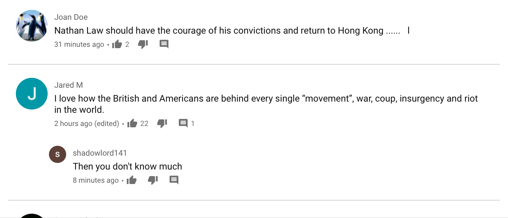

(December 2, 2020) Residents say they can’t go back to their homes since developer China Bloom bought a 99-year lease to take control of Keswick Island in 2019. The Chinese developer has gone as far as banning residents from renting their homes on Airbnb, which residents say has ruined tourism, and blocking them from entering the island from air, land, and sea. Keswick Island, which is owned by the Queensland Government, was declared a national park. (Chinese company buys Australian island, then bans Aussies from living there: report — Fox News)
(December 2, 2020) If further enriched, this quantity could yield more than 30 kilograms (66 pounds) of weapons-grade uranium, enough to build one fission bomb. Iran would require, in total, as little as 5.5 to 6 months to produce enough weapons-grade uranium for two nuclear weapons. ... Because of the added difficulties of building an underground site, the completion of a new centrifuge assembly plant able to assemble thousands of advanced centrifuges per year is unlikely in 2021. ... But whether the Islamic Republic will continue down such a path or will instead seek talks ... to have sanctions lifted and frozen money returned in exchange for promises to again suspend its stockpiling remains to be seen. (Where does Iran's nuclear weapons program stand now? — Fox News)
(December 2, 2020) "I sincerely do not know if we can reach for a deal," Barnier said, according to a transcript of the meeting obtained by DW. The Frenchman said the next 72 hours will be crucial for the fate of the negotiations during a closed-doors meeting of MEPs. The meeting came after some diplomats expressed concern that Barnier's negotiating team might be offering the British government too many compromises. One EU diplomat told Reuters news agency that Barnier should not sign a rushed deal, even if it means a period of trade without an agreement. "There is a worry that because of this pressure of time there is a temptation to rush," the diplomat said after a briefing by negotiator Michel Barnier for the 27 member states' envoys in Brussels. (Brexit: EU's Barnier unsure on liklihood of reaching a deal — DW News)
(December 1, 2020) Just 30 days before Britain leaves the EU’s orbit following a standstill transition period since it formally quit the bloc, the sides are trying to agree a trade deal to avoid a rupture that could snarl almost $1 trillion in annual trade. With each side urging the other to compromise, a French official said Britain must clarify its positions and “really negotiate”, and cautioned that the EU would not accept a “substandard deal”. Irish Prime Minister Micheal Martin said a deal could be done this week, while his deputy, Leo Varadkar, told the Dublin Chamber of Commerce: “We still don’t know what will happen there, but obviously we are all hopeful that we will see an FTA (free trade agreement) concluded in the next couple of weeks.” (No-trade deal Brexit is still possible, UK minister says — Reuters)
(December 1, 2020) A car drove into a pedestrian zone in the southwestern German city of Trier on Tuesday, killing two people and seriously injuring 15 others, officials said. The city of about 110,000 people is known for its Roman gate, the Porta Nigra, which is near the scene of the crash, and as the birthplace of Karl Marx. (Car in Germany plows into pedestrians, kills at least 2 — Fox News)
(December 1, 2020) After making astronomical discoveries for well over half a century, the radio telescope's 900-ton receiver platform, suspended by cables 450 feet (137 meters) above a 1,000-foot-wide (305 meters) bowl-shaped reflector dish, fell on Tuesday morning. The structure was already looking vulnerable after an auxiliary cable snapped in August, causing a 100-foot gash on the 1,000-foot-wide (305-meter-wide) dish. A main cable then broke in early November, prompting the NSF to announce the structure was beyond repair and would have to be demolished. (Puerto Rico: Massive Arecibo Observatory telescope collapses — DW News)
(December 1, 2020) China Coast Guard ship 5402 approached within two nautical miles of the Malaysian oil and gas blocks west of Luconia Shoals on Nov. 19, presumably warning the facilities to stop operations, the Asia Maritime Transparency Initiative said in a report, citing marine traffic data and satellite imagery. The waters off Luconia Shoals saw a standoff between Chinese and Malaysian vessels in 2015. Both countries lay claims to sovereignty of the Luconia Shoals. (Chinese ship harasses Malaysian oil rig and supply vessels in South China Sea — Apple Daily)
(December 1, 2020) “Short-range anti-aircraft missile systems are already on duty on the island of Iturup in Sakhalin Region. Now the air defence ‘heavy artillery’ has arrived. The so-called large air defence system: the S-300V4,” Zvezda said. (Russia deploys advanced S-300 missiles to disputed islands near Japan — Reuters)
(November 30, 2020) The report “Nato 2030”, prepared by a group of so-called “wise persons” and containing 138 proposals, comes amid growing doubts about the purpose and relevance of an alliance branded last year by French President Emmanuel Macron as “brain-dead”. “China is no longer the benign trading partner that the West had hoped for. It is the rising power of our century and Nato must adapt,” said one Nato diplomat who has seen the report, pointing to Chinese activity in the Arctic and Africa and to its heavy investments in European infrastructure. (Nato must focus harder on China’s military rise, urges report — Reuters via SCMP)
(November 30, 2020) The United States on Monday imposed sanctions on Chinese firm China National Electronics Import & Export Corporation (CEIEC), accusing it of supporting Venezuelan President Nicolas Maduro’s efforts to undermine democracy. The US Treasury Department in a statement said the Chinese company supported the leftist government of Maduro in its “efforts to restrict internet service and conduct digital surveillance and cyber operations against political opponents”. CEIEC allegedly provided software, training and technical expertise to entities of Venezuela’s government. (US hits Chinese firm CEIEC with sanctions over Venezuela — Reuters via SCMP)
(November 30, 2020) The short-term stimulus package is valued at $70 billion to $100 billion over roughly three years. Freeland said the government will track progress by monitoring such as employment rate, total hours worked and the level of unemployment in the economy to determine when to end the stimulus spending. O'Toole said the government's approach is to add to the national debtload rather than create the conditions that would get people back to work. After some initial stimulus spending, then-prime minister Stephen Harper's Conservative government cut federal spending across the board with a deficit reduction action plan (DRAP) that downsized the budgets of most departments and agencies by five to 10 per cent. (Liberals to spend $100B to jolt post-pandemic economy after posting record $381B deficit — CBC)
(November 30, 2020) While the breathtaking Whitsundays oasis is 80 per cent national park, the Chinese company controls the remaining 20 per cent and has used its power to padlock all access points to the otherwise government-owned park. She added that the beach, which is a known turtle nesting area, has been overrun with heavy machinery. 'We want to make a home here, we want to buy our piece of Australia, and China is making it very hard.' Ms Asbury added that it 'feels like Keswick Island has become the property of the Chinese Communist Party'. (Chinese company who bought up an idyllic Australian island 'tries to stop Aussies from even setting FOOT there' and keep it exclusively for Asian tourists — Daily Mail)
那老妖到中堂里叫：“小的们，怎么没了灯光？只莫走了人也？”叫一声，没人答应；又叫一声，又没人答应；及取灯火来看时，只见地下血淋淋的三块肉饼，老王父子及唐僧、八戒俱在，只不见了行者、沙僧。点着火，前后赶看，忽见沙僧还背贴在廊下站哩；被他一把拿住捽倒，照旧捆了。又找寻行者，但见几层门尽皆破损，情知是行者打破走了；也不去追赶，将破门补的补，遮的遮，固守家业不题。 (西遊記 第九十回)
行者叫道：“兄弟！不须在此叫唤。师父乐极生悲，已被妖精摄去了！”那几个和尚害怕道：“爷爷，怎见得是妖精摄去？”行者笑道：“原来你这伙凡人，累年不识，故被妖邪惑了，只说是真佛降祥，受此灯供。刚才风到处，现佛身者，就是三个妖精。我师父亦不能识，上桥顶就拜，却被他侮暗灯光，将器皿盛了油，连我师父都摄去。我略走迟了些儿，所以他三个化风而遁。” (西遊記 第九十一回)
行者道：“呆子莫胡谈！且收拾行李。但恐师父着了急，来叫我们，却好进朝保护他。”八戒道：“哥哥又说差了。师父做了驸马，到宫中与皇帝的女儿交欢，又不是爬山蹱路，遇怪逢魔，要你保护他怎的！他那样一把子年纪，岂不知被窝里之事，要你去扶揝？”行者一把揪住耳朵，轮拳骂道：“你这个淫心不断的夯货！说那甚胡话！” (西遊記 第九十三回)
(November 30, 2020) Australia has demanded China apologise for posting a fake picture on a government Twitter account that depicted an Australian soldier murdering an Afghan child. Australia has requested Twitter remove the post from its platform, describing it as "disinformation". Australia has said it will not change its policy positions. On Monday, Mr Morrison confirmed that Australia's requests for meetings with senior Chinese ministers continued to be rebuffed. (Australia demands China apologise for posting 'repugnant' fake image — BBC)
(November 30, 2020) The social media platform — which is banned in China — was scrambling to determine whether Zhao’s use of the image had breached its rules regarding the dissemination of misinformation. However, Hu Xijin, editor-in-chief of Chinese Communist Party mouthpiece Global Times, described the image as a cartoon that condemned Australian special forces for the killings. Morrison’s request for an apology was an “absurd and shameless” move, he said. (China doubles down over incendiary tweet and fake image on Australian war crimes — Apple Daily)
(November 30, 2020) China pledged to enhance its military relationship with Nepal and support its territorial integrity at a time when the small Himayalan neighbour is embroiled in border disputes with India. Wei Fenghe, China’s Defence Minister and State Councillor, made the pledge when he met Nepalese Prime Minister KP Sharma Oli and held talks with the Nepalese Army chief, Purna Chandra Thapa, in Kathmandu on Sunday. (Chinese defence minister declares military support for Nepal against India — SCMP)
(November 30, 2020) “The Chinese military, what they are doing here, they are doing Sun Tzu’s art of war,” Mr Dean said. “They are attacking our army; they have spotted our weakness. They have gone right; we can do two things. We can demoralize the Australian defense forces and at the same time we can delegitimize them in the eyes of the world. This is a purely military strategy to make our army, the most elite and respected SAS in the world, suddenly trash their reputation and demoralize the forces.” (Horrific tweet from China is a military strategy to 'demoralise, deligitimise ADF' — Sky News Australia on YouTube)
(November 30, 2020) British telecom companies will not be allowed to install new Huawei 5G equipment after September 2021, the UK government has announced ahead of a debate on new telecom legislation. (UK to ban installation of new Huawei 5G kit from September — DW News)
(November 30, 2020) "This is a team of some of the most talented, battle-tested communicators out there … who are also all women, most diverse team in history and also 6 Moms of young kids," Psaki, a longtime Democratic spokesperson, said on Twitter. Unlike most Cabinet-level positions, these appointments do not require Senate confirmation. (Joe Biden picks all-female senior White House communications team — DW News)
(November 30, 2020) Besides Japan, QAnon in Brazil has also developed a highly independent ecosystem, according to Graphika. European communities, by contrast, tend to more closely mirror US QAnon: German followers, for instance, often use English hashtags while applying the movement's ideas to their own governments. (QAnon's rise in Japan shows conspiracy theory's global spread — Strait Times)
(November 29, 2020) The move to reform a series of laws governing individual freedoms and social mores comes as the country of nearly 10 million people and a $524-billion economy struggles with a plunge in oil prices and the coronavirus pandemic. In the eyes of the state, the aim of the reforms is to boost the country's economic and social standing and "consolidate the U.A.E's principles of tolerance," the state-run Emirates News Agency, or WAM, reported. It's a position that could also put the country, which has branded itself as an international destination for work and travel, in good stead as it prepares to attract at least 25 million visitors to the World Expo, to be held for the first time in the Middle East in October 2021. The country has been making a number of social changes in recent years. The sweeping changes mean that individuals no longer have to buy a special licence to purchase or consume alcohol as long as they are 21. "They want to be seen as this model place of pluralism and openness and tolerance, but there's a dark side to the Emirates when you look at how they treat foreign workers," Momani said. Trade unions are illegal in the country, and workers who unionize or strike can be deported. (United Arab Emirates banks on social reform to help pull itself out of economic slump — CBC)
(November 29, 2020) The attackers tied up agricultural labourers working in rice fields and slit their throats near Maiduguri, the capital of Borno state, reports say. The victims were labourers from Sokoto state in north-western Nigeria, roughly 1,000 km (600 miles) away, who had travelled to the north-east to find work, another militiaman told AFP. (Farm workers killed in 'insane' Nigeria attack — BBC)
(November 29, 2020) Canada has banned the export of some prescription medicines in order to prevent a shortage in the country. A statement from Canada's health ministry said the country sources 68% of its drugs from overseas and therefore it was important to avoid any disruptions to supplies. (Canada bans mass exports of prescription drugs — BBC)
(November 29, 2020) It comes as Australia is preparing to take China to the World Trade Organisation as a tariff dispute over grain escalates. The Morrison government lodged an appeal against the 80 per cent tariffs which were slapped on grain producers, but China upheld its decision, causing Trade Minister Simon Birmingham to say the next step would be to take the dispute to the WTO. Wine exporters have become the latest casualty of the trade stoush between Australia and China and have been hit by tariffs of up to 200 per cent, triggering fears smaller producers will not be able to recover. “Over the weekend, China found yet another reason to punish Australia,” Mr Murray said. (China found 'yet another reason to punish Australia' — Sky News Australia on YouTube)
(November 28, 2020) "Employers are making the necessary adjustments, and are in the process of carrying out the necessary changes to comply with the regulations," said FMM president Tan Sri Soh Thian Lai. "This sudden change of policy (to take punitive action) appears to show lack of communication among government agencies." Malaysia Employers Federation executive director Shamsuddin Bardan said many employers would "die" faster if the hefty RM50,000 fine were to be imposed for every foreign worker staying in crowded units. "It is a very expensive price to pay, especially given the current challenges. Why burden the employers further with additional cost during such challenging times?" (Malaysia industries in shock as govt threatens to impose stiff fines on poor migrant lodgings — Strait Times)
(November 28, 2020) The draft security law, which has already passed the lower house of the French parliament, aims to protect police officers who are occasionally targeted by terrorists or abused on social media. The police were filmed "beating migrants for apparently no reason," said DW's Lisa Louis. "Many people are outraged about how the police are behaving, and they are saying we need to be allowed to film the police in order to protect ourselves," she added. ... Louis added that people of all backgrounds had joined the protests, including members of the press. The proposed bill would make it a crime to publish photos or videos of on-duty police officers with the intent of harming their "physical or psychological integrity," which critics say would amount to censorship. (Clashes break out in Paris over bill to limit filming of police — DW News)
(November 12, 2020) Jingdong total 11-day sales during Double 11 2020 grew by 32% YoY and reached 271.5 billion yuan (US$41.02 bn) in GMV. Tmall’s 11-day Singles’ Day sales reached 498.2 billion yuan (US$75.27 billion) with an increase of 26% YoY. (Double 11 2020: Alibaba Tmall, JD Singles’ Day sales exceeded US$116 billion — CIW)
(June 20, 2019) Chinese companies' decisions to hire lobbyists have been driven in part by looking at what’s happened to Huawei and ZTE over the last year. Eight other Chinese companies have spent at least $7.9 million hiring Washington lobbying and public relations firms since last spring, right before Trump cracked down on a different Chinese telecom company, ZTE, according to a POLITICO analysis of disclosure filings. The companies — including a Chinese radio company, a state-owned railcar manufacturer and a maker of surveillance cameras — have hired more than two dozen additional lobbyists over the past year, including former lawmakers and Trump campaign veterans. ZTE has responded by spending millions of dollars on lobbying, including hiring former Sens. Joe Lieberman and Norm Coleman and two lobbyists who worked on Trump’s 2016 campaign, David Urban and Bryan Lanza, according to disclosure filings. (Chinese companies spend big to fend off Trump — Politico)
哪吒道：“父王忘了。那女儿原是个妖精。三百年前成怪。在灵山偷食了如来的香花宝烛，如来差我父子天兵，将他拿住。拿住时，只该打死。如来吩咐道：‘积水养鱼终不钓，深山喂鹿望长生。’当时饶了他性命。积此恩念，拜父王为父，拜孩儿为兄，在下方供设牌位，侍奉香火。不期他又成精，陷害唐僧，却被孙行者搜寻到巢穴之间，将牌位拿来，就做名告了御状。此是结拜之恩女，非我同袍之亲妹也。”天王闻言，悚然惊讶道：“孩儿，我实忘了。他叫做甚么名字？” (西遊記 第八十三回)
老怪道：“既拿来，怎么不可吃？”先锋道：“大王吃了他不打紧，猪八戒也做得人情，沙和尚也做得人情，但恐孙行者那主子刮毒。他若晓得是我们吃了，他也不来和我们厮打，他只把那金箍棒往山腰里一搠，搠个窟窿，连山都掬倒了，我们安身之处也无之矣！”老怪道：“先锋，凭你有何高见？”先锋道：“依着我，把唐僧送在后园，绑在树上，两三日不要与他饭吃，一则图他里面干净；二则等他三人不来门前寻找，打听得他们回去了，我们却把他拿出来，自自在在的受用，却不是好？”老怪笑道：“正是，正是！先锋说得有理！” (西遊記 第八十五回)
(November 28, 2020) The several changes under consideration include allowing votes cast by people living on the mainland, electronic voting and setting up designated queues for the elderly. The government calls these “enhancements” that will not affect the electoral system’s impartiality. But critics say they will allow more pro-Beijing voters to participate, skewing the results. During her annual Policy Address, Chief Executive Carrie Lam said the new arrangements would only be adopted if members of the public are not opposed to them. (Controversial voting changes will be adopted for Hong Kong’s 2021 election: government — Apple Daily)
(November 28, 2020) Hong Kong activist Joshua Wong has been sent back to the Lai Chi Kok Reception Centre after spending 72 hours in solitary confinement at a hospital, where he had trouble sleeping as the room light was always switched on. When correctional center staff searched Wong, they said “external objects” were found inside Wong’s stomach via X-ray, so he was sent to solitary confinement at a hospital for 72 hours. (Activist Joshua Wong released after 72 hours in solitary confinement, urges others to fight on — Apple Daily)
(November 28, 2020) Japan is struggling with a mental health crisis as the coronavirus pandemic rages on, with more people dying in one month from suicide than from COVID-19 all year long. Experts say the pandemic has exacerbated mental health issues due to prolonged lockdowns, isolation from family members, unemployment and other financial concerns, and a lack of school structure. (More people died of suicide in Japan in one month than the entire coronavirus pandemic — Fox News)
(November 28, 2020) An Iranian scientist dubbed the leader of Tehran’s military nuclear program until it was ended in the early 2000s was killed in a shooting on Friday -- with the Iranian regime alleging involvement by Israel. (Iranian scientist tied to nuclear program assassinated; Tehran alleges Israeli involvement — Fox News)
(November 28, 2020) The reactor, which was connected to the national grid on Friday (Nov 27), can generate 10 billion kilowatt-hours of electricity each year and cut carbon emissions by 8.16 million tonnes, according to China National Nuclear Corporation (CNNC). The Hualong One, deployed at a plant in east China's Fujian province, will be put into commercial use by the end of the year after undergoing tests. China has 47 nuclear plants with a total generation capacity of 48.75 million kilowatts - the world's third highest after the United States and France. (China's first domestically made nuclear reactor goes online — Strait Times)
(November 27, 2020) Taiwan and the US are moving ahead with a plan to finance infrastructure and energy projects in Asia and Latin America, using capital raised from the private sector to ensure greater transparency, Su Jain-rong said in an interview on Wednesday. He said he hopes to see the first projects start within the next year or two. The plan, initiated with the signing of an agreement between the US and Taiwan in September, aims to raise funds through bonds aimed at Taiwanese banks, insurers and other private capital. (US and Taiwan promote alternative to China’s Belt and Road Initiative — SCMP)
(November 27, 2020) Sky News host Gary Hardgrave says the idea behind the Great Reset is that if you own nothing, you will somehow be happier and simply sell away your “individual soul”. “We’ll take no responsibility for anything, all of that sounds absolutely fantastic because, let’s face it, a lot of people in this country already rather like the idea of never saying sorry, never accepting blame,” Mr Hardgrave said. “These ‘elites’ know best, so there’ll be no point in worrying or working … because everybody is going to win.” Mr Hardgrave said the Great Reset is about a concept which says “the state shall provide”. (Great Reset supports idea you will ‘somehow be happier’ if you own nothing — Sky News Australia on YouTube)
(November 27, 2020) The system involves public security authorities recording the biological and other personal information of applicants, including the face, fingerprints and the chip on their resident ID card. The user will then be able to use various services on the web without having to fear privacy leaks. The authorities have given the assurance that the trusted certificate is very difficult to forge as it is generated using state-level encryption algorithms on the platform, linked to individual ID cards and secured with many layers of passwords. It will be able to stem the risk of identity theft and fraudulent use by doing away with the need for physical documentation, officials say. (‘More monitoring in the offing’ as China pilots digital ID — Apple Daily)
(November 26, 2020) Pennsylvania Governor Tom Wolf and other state officials assailed a Pittsburgh judge for issuing what they described as an unprecedented order halting additional steps in the certification of President-elect Joe Biden's election victory. Mr Wolf and Secretary of the Commonwealth Kathy Boockvar, both Democrats, asked the Pennsylvania Supreme Court to lift the order by Judge McCullough, a Republican, and dismiss the underlying suit, which claimed a state law passed to expand use of mail-in voting was illegal. The case is separate from the federal lawsuit by President Donald Trump's campaign that seeks to undo Pennsylvania's certification unless tens of thousands of allegedly illegal mail-in ballots are invalidated. The state case was brought by Republicans led by US Representative Mike Kelly. (Pennsylvania slams judge's 'overreach' in certification ruling — Strait Times)
(November 26, 2020) But one mutation near the beginning of the pandemic did make a difference, multiple new findings suggest, helping the virus spread more easily from person to person and making the pandemic harder to stop. The mutation, known as 614G, was first spotted in eastern China in January and then spread quickly throughout Europe and New York City. Within months, the variant took over much of the world, displacing other variants. Side by side, did clusters of 614G infections grow faster than infections involving the ancestral variant? The 614G variant clearly won the race, the analysis found. The precise rate remains uncertain, but the most likely value gives 614G roughly a 20 per cent advantage in its exponential rate of growth. (Evidence builds that an early mutation made the Covid-19 pandemic harder to stop — Strait Times)
(November 18, 2020) The Secretary of the United States Navy has called for the Navy to establish a new fleet at the intersection of the Indian and Pacific Oceans. “We can’t just rely on the Seventh Fleet in Japan,” Mr Kenneth Braithwaite said on Tuesday (Nov 17). The plan also comes as the US Navy embarks on an aggressive expansion of its ship and submarine strength over a 30-year horizon. (US Navy plans to raise new fleet in Indo Pacific, says top US official — Strait Times)
好大圣，⋯⋯想着：“那老魔不曾与我会面，就知我老孙的名头，我且倚着我的这个名头，仗着威风，说些大话，吓他一吓看。果然中土众僧有缘有分，取得经回，这一去，只消我几句英雄之言，就吓退那门前若干之怪；假若众僧无缘无分，取不得真经啊，就是纵然说得莲花现，也除不得西方洞外精。” (西遊記 第七十四回)
众妖听说，都道：“大王，孙行者要在你肚里过冬哩！”老魔道：“他要过冬，我就打起禅来，使个搬运法，一冬不吃饭，就饿杀那弼马温！”大圣道：“我儿子，你不知事！老孙保唐僧取经，从广里过，带了个折迭锅儿，进来煮杂碎吃。将你这里边的肝、肠、肚、肺，细细儿受用，还彀盘缠到清明哩！”那二魔大惊道：“哥啊，这猴子他干得出来！” (西遊記 第七十五回)
八戒笑道：“哥啊，去便去，你把那绳儿借与我使使。”行者道：“你要怎的？你又没本事钻在肚里，你又没本事拴在他心上，要他何用？”八戒道：“我要扣在这腰间，做个救命索。你与沙僧扯住后手，放我出去，与他交战。估着赢了他，你便放松，我把他拿住；若是输与他，你把我扯回来，莫教他拉了去。” (西遊記 第七十六回)
行者凄凄惨惨的，自思自忖，以心问心道：“这都是我佛如来坐在那极乐之境，没得事干，弄了那三藏之经！若果有心劝善，理当送上东土，却不是个万古流传？只是舍不得送去，却教我等来取。怎知道苦历千山，今朝到此丧命！——罢！罢！罢！老孙且驾个筋斗云，会见如来，备言前事。“ (西遊記 第七十七回)
(November 26, 2020) On Monday, Morrison commended China for lifting its citizens out of poverty and said the competition between China and the United States had “heavily clouded and distorted” Beijing’s perception that Canberra had taken sides with Washington. Some described the speech as ‘confusing’ and ‘disingenuous’, but others welcomed it as a move towards repairing a relationship worth US$170 billion in two-way trade. (China-Australia relations: Scott Morrison’s speech ‘confusing’ but ‘well-crafted’, offers hope for thawing ties — SCMP)
(November 25, 2020) As we wait for states to certify their results and the results of Trump's lawsuits and Georgia's recount, what can we expect over the next 60 days? DEC 8 "Safe Harbor" deadline. States with contested results must have settled the issue, allowing those new results to be seen as conclusive and will be counted. DEC 14 Electoral College meets to cast ballots. DEC 23 Electoral votes must be received by the president of the Senate, their state's secretary of state, the United States Archivist and the U.S. District Court that rules each state. JAN 6 Congress counts electoral votes. (The election's not over: What to expect in the next 60 days — USA Today)
(November 25, 2020) In a speech for the Thanksgiving holiday, he said Americans were at war with coronavirus, not each other. "It's divided us, angered us, set us against one another. I know the country's grown weary of the fight, but we need to remember - we're at war with the virus, not one another. Mr Biden can now access key government officials and millions of dollars in funds as he prepares to take over the presidency on 20 January. Aide Jen Psaki said he would get his first briefing on Monday, and classified information was already being shared with Mr Biden's senior team. He is set to name more staff including his economic team next week. Most of his picks will need to be confirmed by the Senate. (Biden Thanksgiving speech: We're at war with the virus, not each other — BBC)
(November 25, 2020) "It is my Great Honor to announce that General Michael T. Flynn has been granted a Full Pardon," Trump tweeted. "Congratulations to @GenFlynn and his wonderful family, I know you will now have a truly fantastic Thanksgiving!" Trump commuted the sentence of longtime confidant Roger Stone just days before he was to report to prison. A senior Justice Department official said the department was not consulted on the pardon and learned Wednesday of the plan. But the official said the president has the legal power to pardon Flynn. (Trump pardons former national security adviser Michael Flynn — CBC)
(November 25, 2020) The Argentinian legend, widely regarded as one of the greatest players of all time, passed away at his home in Buenos Aires at the age of 60 on Wednesday after suffering a heart attack having had successful brain surgery earlier in November. (Maradona was a genius on the pitch - but his life outside of it was a slow-motion car crash that would destroy him — Daily Mail)
(November 25, 2020) A lawyer told Taiwan-based Central News Agency that he felt the increasing state control over speech would ultimately affect the country’s economy. He was pessimistic about the current state of affairs and was considering emigration, the report said. ... a 28-year-old surnamed Cheng, said she worked in publishing and was shocked by the level of censorship in the industry. Her friend who was a producer of talk shows was summoned by authorities because of sarcastic content in the shows. (Chinese professionals mulling move abroad amid tightening social control — Apple Daily)
(November 25, 2020) The Baidu Search Box and Baidu Maps collected information that could continue to track users even after they switched to new smartphones, the California-based Palo Alto Networks said in a report. The apps were downloaded a combined six million times in the United States and 1.4 billion times worldwide. Baidu’s “push” software development kit would pick up details such as the phone’s MAC address, carrier information and IMSI number, and send the information to an IP address in China, the report said. The IMSI is a unique identifier for a mobile carrier subscriber and is typically stored on a phone’s SIM card. “If a user switches their SIM card to a new phone and installs an application that previously collected and transmitted the IMSI number, the app developer is able to uniquely identify that user,” the researchers wrote, noting that the information could be exploited by cybercriminals. (Chinese-developed Baidu apps collected sensitive user data, US researchers find — Apple Daily)
(November 25, 2020) China’s top diplomat to Germany has dismissed concerns that Beijing will rely less on the European Union as a result of focusing more on its internal market after signs of rapprochement between the EU and US since the American election. Addressing German and Chinese business leaders and politicians during the Belt and Road Economic Dialogue, held online on Tuesday, Wu sought to explain Beijing’s economic strategy after concerns that it would lead to China turning inward and relying less on imports. (EU will not be snubbed by Beijing, Chinese ambassador assures Germany — SCMP)
(November 25, 2020) By setting up barriers around two housing developments and calling it 1492 Land Back Lane, Six Nations members have forced the town of Caledonia, Ont., to reckon — again — with who actually owns the land. (Beyond the barricades — CBC)
(November 24, 2020) We stand ready to support Afghanistan, and to that end we have made available $600 million for civilian assistance needs in 2021. We are pleased to pledge today $300 million of that money, with the remaining $300 million available as we review progress in the peace process. We will work with Congress to consider sustainable levels for future civilian assistance, as political conditions in Afghanistan allow and as a means to incentivize meaningful reform and positive momentum in the peace process. We have taken careful account of reports of efforts to delay, disrupt, and thwart the progress for which the negotiating teams have worked so hard. (Remarks at 2020 Afghanistan Conference — Department of State)
(November 24, 2020) There will be no Chinese New Year Bazaar at Chinatown next year because of the ongoing pandemic. The decision to halt the bazaar for the first time in its history was a result of concerns over crowd control, said the organisers. A shop owner who wanted to be known only as Madam Neo said the volume of goods she had ordered in anticipation of Chinese New Year was the lowest in two decades. In January this year, 329 stalls took part in the bazaar, which had seen 900,000 visitors in good years. (Next year's Chinese New Year bazaar at Chinatown called off — Strait Times)
(November 24, 2020) The Federal Communications Commission (FCC) said on Tuesday it had rejected a petition from ZTE Corp asking the agency to reconsider its decision designating the Chinese company as a US national security threat to communications networks. The FCC announced in June it had formally designated Chinese’s Huawei Technologies Co. and ZTE as threats, a declaration that bars US firms from tapping an US$8.3 billion government fund to purchase equipment from the companies. (US watchdog affirms China’s ZTE poses national security threat — SCMP)
(November 24, 2020) Xiaomi is seen to be benefiting from sanctions imposed by the United States government on Huawei, another Chinese smartphone maker. As Huawei faces cuts to its supply chain, Xiaomi has managed to grab some of its market share, observers say. It sold 46.6 million devices in the third quarter. Overall, Xiaomi’s total revenue for the quarter rose 34% year on year to 72.1 billion yuan. Internet of Things and lifestyle products contributed income of 18.1 billion yuan, up 16.1% year on year, as global shipments of its smart television reached 3.1 million units, Xiaomi said. (Smartphone sales, Huawei sanctions aid Xiaomi’s 19% net profit rise — Apple Daily)
(November 23, 2020) But since they’re also constrained on total votes, and they’ve already announced the in-person votes, they have to go back and actually re-classify some of the existing in-person votes as being mail votes (Fact 1). Because they’ve added both too many in-person votes total and too many in-person votes for Biden specifically, they decide to delete from the “in-person” a very large pile of Biden votes (since a fair number of these were fraudulent already, and now these can be better disguised with the mail ballots), and a smaller batch of other candidates (so it doesn’t look like only one candidate is changing) (Fact 5). They figure, incorrectly, that this gives them a good defense, that there was a combination of legitimate new mail ballots, plus some group of incorrectly classified in-person ballots. (Statistical Analyst Reveals Scenario of How Dems May Have Pulled Off Massive Fraud in Montgomery County, PA (Part Two) — Revolver.news)
八戒道：“师兄，那道士在那里？等我问他一问，为何这般害我。”行者把蜘蛛精上项事，说了一遍。八戒发狠道：“这厮既与蜘蛛为姊妹，定是妖精！”行者指道：“他在那殿外立定装瞎子哩。”八戒拿钯就筑，又被毗蓝止住道：“天蓬息怒。大圣知我洞里无人，待我收他去看守门户也。”行者道：“感蒙大德，岂不奉承！但只是教他现本像，我们看看。” (西遊記 第七十三回)
(November 24, 2020) "Our case STRONGLY continues, we will keep up the good ... fight, and I believe we will prevail! Nevertheless, in the best interest of our Country, I am recommending that Emily and her team do what needs to be done with regard to initial protocols, and have told my team to do the same," Mr Trump said in a tweet. (Trump finally gives his administration green light to proceed with Biden transition — Strait Times)
(November 24, 2020) “I think this is something to do with the public service ethos; they lose connection with the customers. Your customer makes a decision every day about whether or not you’re going to stay in business and whether or not you keep your job. ABC – the money’s always there, so there’s almost a disdain for the customer.” (Sky News Australia on YouTube)
(November 23, 2020) "We're seeing right now an extraordinary expansion in lunar activity. We've got the US-led Artemis programme (to return astronauts to the Moon) and the partnerships around that; the Chinese with their very ambitious exploration programme; but also many more new actors as well." (Chinese spacecraft sets off on Moon sample quest — BBC)
(November 23, 2020) A superseding indictment was unsealed today against 15 defendants, including alleged members and associates of the South Philadelphia and Southern New Jersey-based criminal organization La Cosa Nostra (LCN), popularly known as the ‘mafia’ or ‘mob.’ The superseding indictment charges various crimes including racketeering conspiracy, illegal gambling, loansharking, extortion, and drug trafficking. (Fifteen Members and Associates of Philadelphia La Cosa Nostra Indicted on Federal Racketeering Charges — DOJ)
(November 23, 2020) Authoritarian regimes have been undermining democratic countries by spreading false information to influence politics, create conflicts and divide friends and family members, Tsai said. In some cases, dictators have manipulated information to be circulated in free and open societies in an attempt to interfere with elections, she said. (The world can learn from ‘Taiwan model’ of battling fake news from authoritarian regimes: Tsai — Apple Daily)
(November 23, 2020) President Donald Trump has recently brokered deals establishing diplomatic relations between Israel and the United Arab Emirates, Bahrain and Sudan. Saudi Arabia cautiously welcomed those moves, but indicated it would not follow suit until there was a peace agreement between Israel and the Palestinians. Citing unnamed sources, Israeli public broadcaster Kan and other media reported that Mr Netanyahu and the head of the Mossad intelligence service, Yossi Cohen, held talks on Sunday evening with Crown Prince Mohammed and US Secretary of State Mike Pompeo. (Israel PM 'flew to Saudi Arabia for secret talks with crown prince' — BBC)
(November 23, 2020) Cash-strapped Pakistan has secured US $ 800 million worth of debt freeze deals from 14 members of the G20 while it still awaits ratification by the remaining six countries of the grouping, including Saudi Arabia and Japan, according to a media report on Sunday. Pakistan along with 76 other poor African countries had qualified for the G-20 debt relief initiative, announced in April this year for May-December 2020 period, to combat the adverse impacts of the COVID-19 pandemic. The maximum relief of US $ 385 million is expected from China, followed by US $ 211 million from Japan, US $ 104 million from France, US $ 53.6 million from Germany, US $ 65 million from the US, US $ 12 million from Saudi Arabia, US $ 7 million from Russia and half a million dollar from the UAE. (Cash-Strapped Pakistan Secures $ 800 Million in Debt Relief From G20 Nations: Report — The Wire)
(November 22, 2020) The number of university graduates sitting for their civil servant exams has reached a record high in China amid the current economic downturn, with 61 applicants competing for one job in the latest round of exams in November. One Peking University masters graduate hired at a state-run enterprise told Southern Weekly that people were scared of getting laid off at big private corporations after the age of 35. (University graduates compete for ‘golden rice bowls’ in China amid economic downturn — DW News)
(November 22, 2020) Six months after US President Donald Trump announced his administration's decision to withdraw from the Open Skies accord, the United States on Sunday officially pulled out of the agreement. The treaty provides for inspection flights over member countries' territories to monitor military activities. (US officially withdraws from Open Skies transparency pact — DW News)
(November 21, 2020) Ontario is home to Toronto, the largest city in Canada with almost 3 million residents. Ontario has seen over 1,400 cases in the past 24 hours, forcing Ontario Premier Doug Ford to initiate a “lockdown.” Perhaps most importantly, public schools will remain open under the lockdown, but “post-secondary” institutions will be open for virtual instruction only. The current region designations will remain in place for a minimum of 28 days, which means that the lockdowns will last until at least Dec. 21, CTV News reported. (Canada places largest city under 'lockdown' for at least 28 days amid coronavirus spikes — Fox News)
(Aug 9, 2020) China’s social credit system, by its wide definition, is a set of databases and initiatives that monitor and assess the trustworthiness of individuals, companies and government entities. ... with the system expected to be rolled out by the end of 2020. The social credit system compiles a score for both individuals and companies after collecting, aggregating and analysing data from different sources. The aim of the system is to improve transparency for the public, although it also serves as a tool for the government to impose control on almost all aspects of its citizens’ lives. The NDRC said in July 2019 that 2.56 million people had been restricted from taking flights, 90,000 people had been prevented from using high-speed rail services and 300,000 people had been deemed untrustworthy by Chinese courts. Critics of China’s social credit system often say Beijing’s commitment to regulating behaviour and mass surveillance is Orwellian in nature, where a government tries to control every part of people's lives, similar to what was described in the novel 1984 by English author George Orwell. (What is China’s social credit system and why is it controversial? — SCMP)
八戒随后赶上来，又举钯乱筑。行者把那物穿了一个大洞，钻将出来道：“呆子！他死也死了，你还筑他怎的？”八戒道：“哥啊，你不知我老猪一生好打死蛇？” (西遊記 第六十七回)
只听得那妖精敲着锣，绪绪聒聒的自念自诵道：“我家大王，忒也心毒。三年前到朱紫国强夺了金圣皇后，一向无缘，未得沾身，只苦了要来的宫女顶缸。两个来弄杀了， 四个来也弄杀了。前年要了，去年又要，今年又要；今年还要，却撞个对头来了。那个要宫女的先锋被个甚么孙行者打败了，不发宫女。我大王因此发怒，要与他国争持，教我去下甚么战书。这一去，那国王不战则可，战必不利。我大王使烟火飞沙，那国王君臣百姓等，莫想一个得活。那时我等占了他的城池，大王称帝，我等称臣，— —虽然也有个大小官爵，只是天理难容也！” (西遊記 第七十回)
(November 22, 2020) Apps will be prohibited ‘even if there’s a change in administration’, national security adviser Robert O’Brien says. Moves by the Trump administration to restrict the Chinese-owned social-media platforms in the United States for what it said were national security reasons have been put on hold as a result of court injunctions. WeChat and TikTok users have argued that the bans were motivated by election year politics rather than genuine security concerns. (Trump’s WeChat, TikTok bans will go through, White House aide says — Bloomberg via SCMP)
(November 21, 2020) Canada and the United Kingdom have reached an interim post-Brexit trade agreement, Prime Minister Justin Trudeau and British Prime Minister Boris Johnson announced Saturday. The announcement came as world leaders virtually convened for the G20 summit. Following the U.K.'s exit from the European Union last winter, the two countries agreed to let the Comprehensive Economic and Trade Agreement (CETA) — the bilateral trade deal in effect between Canada and the EU since 2017 — continue to apply to Canada–U.K. trade until the end of 2020. ... the two sides agreed to "roll over" the CETA in a short-term transitional agreement, replicating most of the existing language and renegotiating only what was required to make it fit U.K.-only trade. Now that negotiations have concluded, the deal must be approved by both governments. (Canada, U.K. strike transitional post-Brexit trade deal — CBC)
(November 21, 2020) "Massive voter fraud will be shown!" Trump wrote on Twitter. The Trump campaign now has two business days to request a recount in Georgia. ... On Saturday, the Republican National Committee and the Michigan Republican Party wrote to the state board of canvassers asking it to adjourn for 14 days to allow for an audit of ballots in Wayne County, which includes the majority-Black city of Detroit. (Battered by setbacks in push to reverse Biden win, Trump persists with fraud claims — Strait Times)
(November 21, 2020) The Republican president gained a 6% vote share among black men, and a 5% increase among Hispanic women. ... In 2020 Latinos overtook the black community to become the largest minority voting bloc in the country - and are therefore a politically powerful group. ... Mateo has brushed off accusations of racism levelled against the president. Instead, he says he was attracted by Mr Trump's isolationist foreign policy and economic policies. ... Even on issues such as immigration, on which President Trump has been notoriously hardline, the Latino community is less monolithic than some assume. (US election results: Why Trump increased support among non-whites — BBC)
(November 21, 2020) Pensioners in mainland China may be unable to get all the money due to them in the next five to 10 years, as insurers estimate a possible shortage of 8 to 10 trillion yuan (US$1.2 trillion to US$1.5 trillion) in the system. Recently, the Ministry of Civil Affairs predicted that the national elderly population would reach 300 million in the five years between 2021 and 2025, when the first generation of parents who were dictated to bear only one child per couple would enter their senior years and pose great challenges to elderly care services. (China’s pensions can’t catch up with aging population: report — Apple Daily)
(November 21, 2020) The 16-year-old social media star has lost more than one million followers since she posted a YouTube video earlier in the week, in which she whined about not having 100 million followers. In an exchange between D'Amelio and Charles, she complained that she would not hit her target of going from one million to 100 million followers within a year. Subsequently, she posted a teary message on Instagram Live on Thursday (Nov 19) about what she termed a "misunderstanding". (Top TikTok star Charli D'Amelio loses 1m followers — Strait Times)
(November 21, 2020) China and the Vatican have recently renewed a secret agreement first signed two years ago ... However not everybody is in favour of this agreement, especially since no body knows what it entails ... former bishop of Hong Kong, Cardinal Joseph Zen has accused the Vatican city's secretary of state cardinal Parolin of betraying the 12 million catholics in China in favour of appeasing the communist regime. (WION on YouTube)
(November 20, 2020) The international Organization of American States (OAS) has called on its 35-member nations to reject the parliamentary elections planned by Venezuelan President Nicolás Maduro next month on Dec. 6. Guaido has already denounced the December election as “fraud,” and points to Venezuela’s Maduro loyalist-Supreme Court having appointed officials to the nation’s top electoral body, instead of recognizing parliament’s role in the process, France 24 reported. (Organization of American States warns of sham elections in socialist Venezuela — Fox News)
(November 20, 2020) Attorney General William P. Barr today directed the Federal Bureau of Prisons to schedule the executions of three federal-death row inmates sentenced to death for staggeringly brutal murders, including the murder of a child and, with respect to two inmates, the murder of multiple victims. (Executions Scheduled for Inmates Convicted of Brutal Murders Many Years Ago — DOJ)
(November 4, 2020 - day after US election) On 5 January, Iran took its latest step in reducing its commitments to the Joint Comprehensive Plan of Action (JCPoA), and said it would no longer observe any operational limitations on its nuclear industry, whether concerning the capacity and level of uranium enrichment, the volume of stockpiled uranium or research and development. ... The Iranian parliament yesterday approved a bill requiring the Atomic Energy Organisation of Iran (AEOI) to produce at least 120 kg of 20% enriched uranium annually at the Fordow nuclear site, FARS news agency reports. AEOI is required to start this process within two months and store the enriched uranium inside the country. (Iranian parliament orders increase in uranium enrichment — World Nuclear News)
(August 26, 2020) The Bureau of Industry and Security (BIS) in the Department of Commerce (Commerce) added 24 Chinese companies to the Entity List for their role in helping the Chinese military construct and militarize the internationally condemned artificial islands in the South China Sea. (Commerce Department Adds 24 Chinese Companies to the Entity List for Helping Build Military Islands in the South China Sea — Department of Commerce)
(May 22, 2020) These nine parties are complicit in human rights violations and abuses committed in China’s campaign of repression, mass arbitrary detention, forced labor and high-technology surveillance against Uighurs, ethnic Kazakhs, and other members of Muslim minority groups in the Xinjiang Uighur Autonomous Region (XUAR). (Commerce Department to Add Nine Chinese Entities Related to Human Rights Abuses in the Xinjiang Uighur Autonomous Region to the Entity List — Department of Commerce)
(May 22, 2020) The Department of Commerce’s Bureau of Industry and Security (BIS) announced it will add 24 governmental and commercial organizations to the Entity List for engaging in activities contrary to the national security or foreign policy interests of the United States. (Commerce Department to Add Two Dozen Chinese Companies with Ties to WMD and Military Activities to the Entity List — Department of Commerce)
八戒闻言，不论好歹，一顿钉钯，三五长嘴，连拱带筑，把两颗腊梅、丹桂、老杏、枫杨俱挥倒在地，果然那根下俱鲜血淋漓。三藏近前扯住道：“悟能，不可伤了他！他虽成了气候，却不曾伤我。我等找路去罢。”行者道：“师父不可惜他。恐日后成了大怪，害人不浅也。”那呆子索性一顿钯，将松、柏、桧、竹一齐皆筑倒，却才请师父上马，顺大路一齐西行。 (西遊記 第六十四回)
佛祖道：“他是我面前司磐的一个黄眉童儿。三月三日，我因赴元始会去，留他在宫看守，他把我这几件宝贝拐来，假佛成精。那搭包凡是我的后天袋子，俗名唤做‘人种袋’。那条狼牙棒是个敲磐的槌儿。”行者听说，高叫一声道：“好个笑和尚！你走了这童儿，教他诳称佛祖，陷害老孙，未免有个家法不谨之过！“ (西遊記 第六十六回)
(November 20, 2020) Confirmation of the plan came on Friday from Taiwan’s Minister of Foreign Affairs Joseph Wu and Hsiao Bi-khim, the Taiwanese representative to the United States, after the New York Times published a report saying that Wheeler would lead a delegation early next month to advance cooperation in ocean protection. His trip would be the third by a top U.S. office-holder since August, taking place amid increasing tension between Taiwan and mainland China. (US to send third top official to Taiwan in December — Apple Daily)
(November 20, 2020) Sidney Powell, an attorney on President Trump's election legal team, shot back at Fox News host Tucker Carlson the morning after he said she "got angry" and refused to provide evidence on his show for her claims of voting software flipping votes. Powell alleged that various "spikes" in the vote count following election night were evidence that someone was using the software in order to steal votes from Trump and propel President-elect Joe Biden to victory. Dominion has “categorically" denied charges of fraud, such as vote-switching and software errors. (Sidney Powell fires back: Tucker Carlson was 'insulting, demanding, and rude' — Washington Examiner)
(November 20, 2020) But Wong has little confidence in the judicial process ahead. "Courts in Hong Kong are being interfered with by the Beijing authorities and the rule of law in Hong Kong exists in name only." Wong hopes others will keep a watchful eye on developments in Hong Kong should he go to prison. (Hong Kong: Joshua Wong remains defiant in face of potential five years in prison — DW News)
(November 19, 2020) The state of Georgia has until Friday to certify the results from the audit. After that, the losing campaign has two business days to request a recount as, according to state law, the margin between candidates is less than 0.5%. Because the results of the hand-counted audit were in line with the machine tally, any recount would be conducted by machines scanning paper ballots. ... Hours later, however, US media reported that US President Donald Trump had invited top Michigan lawmakers to the White House to discuss the election result in the state. The two Republicans, Michigan Senate Majority Leader Mike Shirkey and House Speaker Lee Chatfield agreed to go, according to a source cited by the AP news agency. (US election: Georgia vote audit confirms Biden victory — DW News)
(November 19, 2020) The conclusions acknowledge that while there have been leaps forward, there has also been a pushback against the universality and indivisibility of human rights. The ongoing COVID-19 pandemic and its socio-economic consequences have had an increasingly negative impact on all human rights, democracy and rule of law, deepening pre-existing inequalities and increasing pressure on persons in vulnerable situations. No one should be left behind, no human right ignored. ... Digital technologies must be human-centred and human rights compliant. ... Promote discussions and actions to maximise the opportunities of new technologies, including artificial intelligence (AI), while remaining vigilant on the risks that they may pose to human rights and democracies, at international and country level. (Council approves conclusions on the EU Action Plan on Human Rights and Democracy 2020-2024 — Council of the EU)
(November 19, 2020) The British government said it would spend an extra 16.5 billion pounds ($21.8 billion, €18.4 billion) on the military over the next four years. The current defence budget is just short of 42 billion pounds a year. The money will help to counter potential future threats, Johnson said. High on the list are space and cyber-defense projects such as an artificial intelligence agency. The increase would put the United Kingdom way ahead of any other European countries in terms of its overall spending on defence, and cement its postion as biggest European spender in the NATO military alliance. A 2018 European Parliament research paper said that France is the second biggest spender in overall terms, setting aside €40 billion a year for its military. Germany comes in third position, spending €32 billion, according to the report. (DW News)
(November 19, 2020) More than 600,000 Jews live in about 140 settlements built since Israel's occupation of the West Bank and East Jerusalem in the 1967 Middle East war. Most of the international community considers the settlements illegal under international law, though Israel disputes this. Mr Pompeo will also go to the Israeli-occupied Golan Heights on Thursday. "The simple recognition of this as part of Israel... was a decision President Trump made that is historically important and simply a recognition of the reality," he said. (BBC)
(November 19, 2020) Speaking by video link from Beijing to a meeting of Asia-Pacific CEOs, Xi promised to open China’s market wider but announced no initiatives to respond to complaints the ruling Communist Party improperly subsidizes and shields technology and other industries from foreign competitors. “We will never go back in history by seeking to decouple or forming a ‘small circle' to keep others out," Xi said. Xi promised to cut tariffs but gave no details. (Xi: China will avoid decoupling amid tension with US, Europe — ABC)
(November 18, 2020) The Iranian regime seeks a repeat of the failed experiment that lifted sanctions and shipped them huge amounts of cash in exchange for modest nuclear limitations. The regime desperately needs an economic lifeline. For that reason, they make two arguments: sanctions are useless and ineffective; or, in the alternative, when sanctions are effective they hurt only the Iranian people and not the regime; either way they should be removed. The regime’s greatest fear is that sanctions will remain. (The Importance of Sanctions on Iran — Department of State)
(November 18, 2020) The closure, which is expected to be temporary, comes as the local positivity rate averaged 3% over a week-long period. In-person instruction will not restart until the average falls below that threshold. Last week, Cuomo reinstated restrictions on bars, restaurants and gyms, effective Friday. However, these establishments currently remain open even as schools close, which is another sore spot. (Fox News)
(June 24, 2020) The Pentagon confirmed that roughly 400 D.C. Guard members have been activated and are on standby. "Since their activation, none of the National Guard members have been dispatched to actual monument locations to provide assistance to the NPP," Pentagon spokesperson Lt. Col. Christian Mitchell said in a statement. "They remain on standby at the DC Armory at this time. They will support U.S. Park Police at key monuments to prevent any defacing or destruction." (Fox News)
(Dec 06, 2019) In the video, Trudeau is seen talking with French President Emmanuel Macron, British Prime Minister Boris Johnson, Dutch Prime Minister Mark Rutte and Princess Anne at a reception at Buckingham Palace on Tuesday evening, where they appear to be mocking the president. ... “Justin Trudeau’s poor judgment, lack of professionalism, and love of drama continues to weaken Canada’s position on the world stage,” Scheer said. ... Earlier at the NATO meeting, Trump put Trudeau on the spot over Canada not meeting its commitment of two per cent of GDP for NATO military spending. (National Post)
(Nov. 13, 2019) Two cases of the fatal and highly infectious illness, which is related to bubonic plague, were found in Beijing, prompting fears of an outbreak. Beijing officials said the two infected people came from Inner Mongolia, a sparsely populated region of northern China. (NY Times)
(Nov 12, 2019) The world needs "new ways of cooperation, new alliances," French President Emmanuel Macron said at the Paris Peace Forum on Tuesday. "We are experiencing an unprecedented crisis in our international system," Macron said. On Tuesday, Macron said there should be no "squeamishness or hypocrisy" when it comes to questioning the workings of international bodies such as the UN, which he said had become "blocked." China's Vice President Wang Qushan said that "tendency of replacing rational thinking and action with the outpouring of emotions" was not helpful. (Macron tells world leaders nationalism is 'war' at Paris summit — DW News)
(October 23, 2019) It has also presented a serious challenge to China's leaders in Beijing, who have painted the demonstrators as dangerous separatists and accused foreign powers of backing them. Critics of the planned law had feared extradition to mainland China could subject people to arbitrary detention and unfair trials. "There are still other demands the government needs to meet, especially the problem of police brutality," she said. The Financial Times newspaper reports that China's government is drawing up plans to remove Ms Lam, a figure loathed by protesters whom Beijing has thus far stood by. Separately on Wednesday, Hong Kong released the murder suspect whose case led to the extradition bill in the first place. (BBC)
(September 26, 2019) Pelosi has been the voice of restraint in the House, declining to take up the cause of impeachment as the House pursued its oversight of the administration in the aftermath of former special counsel Robert Mueller's report. Her approach was always a bit incongruent for the congresswoman from liberal San Francisco, where so many of her own constituents wanted to see Trump impeached long ago. (CTV)
(June 1, 2019) The tariff increase affects a broad range of consumer goods, and intermediate components from China including internet modems and routers, printed circuit boards, furniture, vacuum cleaners and lighting products. Its rhetoric has hardened particularly since Washington put Chinese company Huawei Technologies Co Ltd on a blacklist that effectively bans the firm from doing business with U.S. companies. (Reuters)
(April 4, 2019) He said Turkey "must choose" between remaining a key Nato member or risk the security of that partnership "by making such reckless decisions". Turkey responded that the purchase of the advanced system was a done deal. Turkey has the second-largest army in Nato, a 29-member military alliance set up to defend against what was at the time the Soviet Union. Mr Pence also rebuked Germany - another key Nato member - for not spending enough on its defence. (BBC)
(January 2019) On January 5, authorities asked for peace after violence erupted as the yellow vests protests continued in France. Nearly 50,000 people have taken part in the demonstrations throughout the country. (Infoplease.com)

牛王道：“你这土地，全不察理！那泼猴夺我子，欺我妾，骗我妻，番番无道，我恨不得囫囵吞他下肚，化作大便喂狗，怎么肯将宝贝借他！”说不了，八戒赶上骂道：“我把你个结心癀！快拿出扇来，饶你性命！”那牛王只得回头，使宝剑又战八戒。孙大圣举棒相帮。 (西遊記 第六十一回)
却说孙大圣与八戒驾着狂风，把两个小妖摄到乱石山碧波潭，住定云头。将金箍棒吹了一口仙气，叫“变！”变作一把戒刀，将一个黑鱼怪割了耳朵，站鱼精割了下唇，撇在水里，喝道：“快早去对那万圣龙王报知，说我齐夭大圣孙爷爷在此，着他即送祭赛国金光寺塔上的宝贝出来，免他一家性命！“ (西遊記 第六十三回)
(November 18, 2020) South-east Asia's largest bank, DBS, will introduce a formal job-sharing scheme to support employees who need more flexible work arrangements, among other initiatives aimed at transforming the way its staff work in a post-pandemic world. At the same time, the bank will also introduce more part-time work arrangements. DBS has a 12,000-strong workforce in Singapore. (Strait Times)
(November 18, 2020) Tishman Speyer, the company that owns the Rockefeller Center, has said it is particularly proud to keep the tree tradition going this year, ... But some social media users joked that its "underwhelming" and "bare" appearance was appropriate for 2020. ... Elsewhere, the Christmas tree in Rome in 2017 was widely panned on social media, with some likening it to a toilet brush. (BBC)
(November 18, 2020) At least 34 people were injured in a gas explosion at a restaurant in Miluo, a city in the central Chinese province of Hunan. A gas canister exploded around noon on Wednesday near the Miluo East high-speed railway station, the official Xinhua news agency reported. (Apple Daily)
(November 17, 2020) Bulgaria's foreign minister has rejected talks over North Macedonia's entry into the EU due to open disputes between the two countries. The veto is the most recent stumbling block for North Macedonia's accession bid. (DW News)
(November 17, 2020) O'Toole said the western world has tolerated China's human rights abuses, intellectual property theft and manipulative trade practices for decades in order to gain access to the country's burgeoning economy. He said it's time for Canada and its closest allies to adopt a more aggressive posture. "The democratic world must acknowledge that the approach to China over the last two decades has not worked. In fact, the situation has gotten worse," O'Toole told reporters on Parliament Hill. He said the move to normalize relations and admit China to the World Trade Organization has had "catastrophic impacts for Canadian workers." Conservative MP Michael Chong, the party's foreign affairs critic, will table a motion today to put pressure on the Liberal government to ban Chinese telecommunications giant Huawei from building Canada's 5G network. Most of the country's wireless providers have opted already to work with Sweden-based Ericsson. (CBC)
(November 17, 2020) The US Department of Defense said Miller and Stoltenberg had "discussed the continued importance of coordination in support of NATO Missions in Afghanistan and Iraq." Afghanistan has remained gripped by violence in recent months, with negotiators between its Kabul government and the Taliban in Qatar making little progress after US-Taliban talks highlighted by Trump last year. ... Lungescu, however, put the troop strength Monday at "under 12,000" and quoted NATO Secretary General Jens Stoltenberg as saying "we continue to adjust our presence." (DW News)
(November 16, 2020) Secretary of State Michael R. Pompeo met with French Foreign Minister Jean-Yves Le Drian today in Paris, France. Secretary Pompeo and Foreign Minister Le Drian emphasized the importance of the Transatlantic alliance and our shared goal of NATO unity. The Secretary discussed our strong alliance in countering the Chinese Communist Party’s malign activity in Europe and human rights abuses in Xinjiang. (Department of State)
(November 16, 2020) “The department has made incredible strides in countering the systemic efforts by [China] to enhance its economic and military strength at America’s expense,” Barr said in the report. “While much work remains to be done, the department is committed to holding to account those who would steal, or otherwise illicitly obtain, the US intellectual capital that will propel the future.” Initiative’s goals include investigating trade secret theft and economic espionage and countering threats posed by Chinese foreign investment ... analysts expect the Biden administration to continue the programme in some form. (SCMP)
(November 16, 2020) According to diplomatic sources, Hungary and Poland argued the budget plan would interfere in their domestic laws. Support for this instrument is necessary to pass a 1.8-trillion-euro (2.1-trillion-dollar) long-term spending plan and coronavirus economic recovery fund. ... The veto is likely to delay the delivery of much-needed cash for the EU, with the seven-year budget set to begin January 1. ... "Because this is not rule of law, which is just a pretext, but it is really an institutional, political enslavement, a radical limitation of sovereignty," Zbigniew Ziobro asserted. ... "We'll see if Budapest and Warsaw are looking for guarantees and if these are acceptable," AFP news agency quoted an unnamed diplomat as saying, who warned of a "serious political crisis." (DW News)
(November 16, 2020) At the outset, the Department identified academia as one of our most vulnerable sectors, because its traditions of openness, and the importance of international exchanges to the free flow of ideas, leave it vulnerable to PRC exploitation. The Department has pursued a two-pronged strategy of raising awareness on campuses of the threats posed by China (and the importance of implementing a security program to detect them) and prosecuting researchers who have deliberately deceived authorities about their ties to China, which deprives institutions of the ability to screen for conflicts of interest and commitment, or otherwise exploited their access. (DOJ)
(November 12, 2020) World Factbook: In the Communications category, the entries for "Telephones - mobile cellular" and "Telephones - fixed lines" have been updated for all countries with the latest available data. (CIA)
(October 19, 2020) Under the embargo, which came into effect in 2007, the export of "certain conventional arms to Iran" and the "procurement of any arms or related materiel from Iran" was cemented as a violation of the UN Security Council resolution and remained subject to sanctions. Yet, the UN adamantly rejected an appeal from the U.S. in August to extend the blockade. On Sunday, U.S. Secretary of State Mike Pompeo issued a stark word of warning to anyone endeavoring to do arms deals with Iran. The country's defense minister, Amir Hatami, vowed during a Sunday evening television interview that they won't sell to countries that would "misuse" deadly arms, and would deploy weapons "strictly for defense purposes." "This is a big propaganda victory for Iran. They will take advantage of the opportunity to highlight Washington's isolation, even as their diplomatic victories pile up," Bruen added. (Fox News)
行者骂道：“你这泼魔，今番坐定是死了！不要走！吃吾一掌！”急纵身跳个满怀，劈脸打了一个耳括子，回头就跑。那魔轮枪就赶，只听得高峰上叫道：“那牛儿还不归家，更待何日？”那魔抬头，看见是太上老君，就唬得心惊胆战道：“这贼猴真个是个地里鬼！却怎么就访得我的主公来也？” (西遊記)
行者道：“你若使住法儿不允他，他便不肯倒换关文，不放我们走路。倘或意恶心毒，喝令多人，割了你肉，做甚么香袋啊，我等岂有善报？一定要使出降魔荡怪的神通。你知我们的手脚又重，器械又凶，但动动手儿，这一国的人，尽打杀了。他虽然阻当我等，却不是怪物妖精，还是一国人身；你又平素是个好善慈悲的人，在路上一灵不损；若打杀无限的平人，你心何忍！诚为不善了也。” (西遊記)
(November 16, 2020) “But in the year 2000, as I pointed out, it took 37 days for the legal battle to be sorted out after the 2000 election. Mr Jones questioned why there is an “unseemly rush now for Biden to declare victory, as Biden himself did last Saturday week”. “I repeat, if liberty means anything, it means the right to tell people what they don't want to hear”. Mr Jones also said there is a "new form of cancel culture at work" as some law firms representing Donald Trump's legal push to challenge the vote in many states are withdrawing under phenomenal pressure from online criticism. "Onslaughts. These Trump haters have launched social media campaigns attacking international law firms who are now backing away from pursing voter fraud law suits," he said. (Sky News Australia on YouTube)
(November 15, 2020) The Office of the Superintendent of Bankruptcy Canada reported this week 7,658 Canadians filed insolvencies in September, an increase of almost 19 per cent from the previous month's level and the highest since the COVID-19 pandemic began in March. Government programs such as the Canada Emergency Response Benefit (CERB) were a lifeline for many of them, but with that program finished and now transferred into the less generous Canada Recovery Benefit — which is itself set to expire next year — the number of Canadians on a financial knife's edge is set to grow. Pommells says even before the pandemic many people were not taking advantage of credit counselling services that can often help them find a path out of a financial quagmire. (CBC News)
(November 15, 2020) Thousands of people have taken to the streets across several Peruvian cities as citizens vented their frustrations at the impeachment of Martin Vizcarra. Congress has urged interim president Manuel Merino to step down. Vizcarra has vehemently denied the allegations and repeated his innocence prior to the impeachment vote. He has accused the opposition of trying to destabilize the country. (DW News)
(November 15, 2020) Tse described himself as “the opposition within the establishment,” following the exit of 19 pro-democracy lawmakers this week. “When no one plays the role [of the opposition], we will have to more or less take up the role” to express opposition views, he said, but added a caveat, that they were not to overstep Beijing’s bottom line. (Apple Daily)
(November 15, 2020) The low-tech social engineering attacks are always the hardest since they have greater potential to evade technical controls. We also increased our simulated phishing campaigns and security awareness training offerings to empower our front-line defenses: our employees. We started locking down remote collaboration tools at the state level, and ran into some issues supporting public meetings, which need to be open and easy to access. So we pivoted to defaulting to the most secure collaboration tool settings and gave agencies the ability to modify their settings based on meeting the business's need. ... We are also enhancing our offensive security capabilities by increasing threat intelligence collection and analysis, and by hiring positions dedicated to pen testing and threat hunting. We are also focused on workforce development initiatives to ensure all public and private organizations in Montana have access to the skilled and diverse cybersecurity workforce they need to ensure the security, resiliency and prosperity of their businesses in an evolving global threat environment and a highly competitive cybersecurity job market. (Security Boulevard)
(November 15, 2020) This also, however, could end up being fertile ground for someone hunting evidence of cyber attacks. First in 2016 the U.S. warned its “military hackers have penetrated Russia’s electric grid…for cyber attacks that could turn out the lights…”. By the summer of 2018 the Wall Street Journal reported that Russia was trying to say much of the same and prove they had breached America’s power grid. It was thus just a few months after a round of boasting about taking electricity offline when Russia reportedly experienced “several cases of power outage all over the [northwest] region, including in the cities of Severomorsk and Murmansk…”. (Security Boulevard)
(November 15, 2020) Chinese soldiers allegedly used microwave weapons against Indian troops in an attempt to take the area around the contested Pangong Tso lake, according to a state-honored scholar from China. A microwave weapon is a directed-energy weapon that aims at targets with highly concentrated microwaves. Since 2016, dozens of U.S. consulate employees reported mild traumatic brain injuries after hearing strange, piercing sounds. Similar attacks have happened in China, first in Guangzhou in 2018 and then in Beijing and Shanghai, prompting Washington to send consulate staffers back home to the U.S. (Apple Daily)
(November 14, 2020) Mr Cummings and director of communications Lee Cain, who resigned on Thursday, will work out their notices at home following tensions within No 10. Lord Lister will become interim chief of staff pending a wide-ranging shake-up of the prime minister's team. Mr Cain will be replaced by James Slack, who is currently the prime minister's official spokesman. The departure of Mr Cummings and Mr Cain comes as the government grapples with coronavirus, and as trade talks between the UK and the EU on a future relationship reach a "make or break" point - with crucial differences proving hard to resolve. (BBC News)
(November 14, 2020) The Regional Comprehensive Economic Partnership is a proposed free-trade agreement that includes China, Japan, South Korea, Australia, New Zealand and 10 member states of the Association of Southeast Asian Nations. The deal aims to eliminate import tariffs and establish common rules for e-commerce, trade and intellectual property for its signatories. RCEP members have agreed to go ahead with the pact without India, who withdrew last year citing concerns that it would worsen a trade deficit with China. The RCEP will be the world’s largest trade deal, with the signatories accounting for a third of the world’s gross domestic product and population. (Apple Daily)
(November 14, 2020) Zarif wrote his tweet before setting off for a two-day visit to Pakistan. That is because Iran has many neighbors that are US allies. Pakistan is one of them. Its head of government, Imran Khan, was very quick to congratulate Biden and the vice president-elect, Kamala Harris. Zarif's message was not well-received in Saudi Arabia, either, which is Iran's most powerful regional rival. (DW News)

众僧道：“只因呼风唤雨，三个仙长来此处，灭了我等；哄信君王，把我们寺拆了，度牒追了，不放归乡，亦不许补役当差，赐与那仙长家使用，苦楚难当！但有个游方道者至此，即请拜王领赏；若是和尚来，不分远近，就拿来与仙长家佣工。”行者道：“想必那道士还有甚么巧法术，诱了君王？——若只是呼风唤雨，也都是傍门小法术耳，安能动得君心？” (西遊記)
虎力大仙道：“陛下，左右是‘棋逢对手，将遇良材。’贫道将锺南山幼时学的武艺，索性与他赌一赌。”国王道：“有甚么武艺？”虎力道：“弟兄三个，都有些神通。会砍下头来，又能安上；剖腹剜心，还再长完；滚油锅里，又能洗澡。”国王大惊道：“此三事都是寻死之路！” (西遊記)
(November 13, 2020) The attacks we have seen, not only in recent weeks, have shown the extent of the threat we face from all forms of terrorism. Only together we can put a stop to the terrorists and their backers. Given the transnational nature of terrorist networks, we can clearly see the extent to which measures at European level are important and necessary. We reaffirm our determination to do everything in our power to counter this barbaric terror holistically, with all the instruments at our disposal, while fully maintaining all guarantees under the rule of law as well as fundamental freedoms. Europe’s foundation will not be shaken by the scourge of violent extremism and terrorism. The terrorists cannot win their fight. We will take action against the threat of polarisation. In early December at the Council of Ministers for Justice and Home Affairs, we will present comprehensive Council conclusions on internal security and on a European police partnership. These conclusions will also address the key issue of preventing violent extremism and combating terrorism. (Council of the European Union)
(November 13, 2020) “Joe Biden is talking about ‘build back better’, and then we’ve got this sort of post-COVID world, the new normal – all this mantra, don’t let it fool you,” Mr Hardgrave said. “What does it actually mean, and do we actually get a say? Well the bottom line is we won’t. This is a deal that is being done by the elites and is being foisted upon the weak, the weak governments of the world. This big great reset is actually going to be a bigger virus than COVID, it’s going to have more of an impact on your lifestyle than you could imagine.” (Sky News Australia on YouTube)
(November 13, 2020) Doshi, Assistant Professor for the UCL School of Management said, “Many models that predict false information use the content of articles or behaviors on social media channels to make their predictions. By the time that data is available, it may be too late. These producers are nimble and we need a way to identify them early. By using domain registration data, we can provide an early warning system using data that is arguably difficult for the actors to manipulate. Actors who produce false information tend to prefer remaining hidden and we use that in our model.” By applying a machine-learning model to domain registration data, the tool was able to correctly identify 92% of the false information domains and 96.2% of the non-false information domains set up in relation to the 2016 US election before they started operations. ... “Social media companies and regulators need to be more engaged in dealing with this very real issue and corporates need to have a plan in place to quickly identify when they become the target of this type of campaign.” (Security Magazine)
(November 13, 2020) After the launches it was reported that the missiles fell into the South China Sea, ... One of the missiles, a DF-26B, was launched from the northwestern province of Qinghai, while the other, a DF-21D, lifted off from Zhejiang province in China’s east. The launches came a day after Beijing said a US U-2 spy plane entered a no-fly zone without permission during a Chinese live-fire naval drill in the Bohai Sea off its northern coast. (SCMP)
(November 13, 2020) Some Singaporean students studying in Australia, and those who are planning to pursue their studies there next year, are filled with worry following the announcement on Friday (Nov 13) that foreign students will not be allowed to return to Australia in a bid to slow the spread of Covid-19. Mr Morrison's announcement comes after Canberra began trials earlier this year to phase the return of overseas students in 2021. (Strait Times)
(November 12, 2020) As part of his plea, Zheng admitted he lied on applications in order to use approximately $4.1 million in grants from the National Institutes of Health (NIH) to develop China’s expertise in the areas of rheumatology and immunology. Zheng was a professor of internal medicine who led a team conducting autoimmune research at The Ohio State University and Pennsylvania State University. According to his plea, Zheng caused materially false and misleading statements on NIH grant applications, seeking to hide his participation in Chinese Talent Plans and his affiliation and collaboration with a Chinese university controlled by the Chinese government. Making false statements to the federal government is a crime punishable by up to five years in prison. (Department of Justice)
(November 6, 2020) The pandemic has been a wake-up call and companies, after assessing costs and benefits, may begin making shifts to their supply chains in order to reduce future risk. This may include moving in and out of certain regions, developing enhanced but practical approaches to risk mitigation, and diversifying supply sources. Given the global supply chain difficulties ICT companies are currently encountering because the virus adversely affects their ability to compress their cycle time, there are active policy discussions as to whether firms should be provided with various incentives to bring manufacturing home, closer to home, or to never leave in the first place. (CISA)
(October 23, 2020) But comparing the total number to that expected number leads to a difference that ultimately leads to the 300,000 excess deaths that you just mentioned. About two-thirds of those we can link directly to COVID-19. What about the other third – that’s as you know an important question to address as well. ... Some of them also may be unrecognized impacts of COVID-19. So when we look at factors like cardiovascular death that aren’t directly linked to COVID-19, there’s not a really great explanation for why we would see that increase in cardiovascular death and we know that it’s possible that COVID-19 could be playing a role in those deaths as well. And overall I think it emphasizes the importance of the prevention measures that we’ve been talking about. (CDC)
(October 22, 2020) Today, the U.S. Food and Drug Administration approved the antiviral drug Veklury (remdesivir) for use in adult and pediatric patients 12 years of age and older and weighing at least 40 kilograms (about 88 pounds) for the treatment of COVID-19 requiring hospitalization. Veklury should only be administered in a hospital or in a healthcare setting capable of providing acute care comparable to inpatient hospital care. Veklury is the first treatment for COVID-19 to receive FDA approval. (FDA)
行者与沙僧见了道：“你这厮不遵旨令。你舅爷原着你在此居住，教你养性存身，待你名成之日，别有迁用；你怎么强占水神之宅，倚势行凶，欺心诳上，弄玄虚，骗我师父、师弟？我待要打你这一棒，奈何老孙这棒子甚重，略打打儿就了了性命。你将我师父安在何处哩？” (西遊記)
(November 12, 2020) The government said the latest update, which has been under discussion for at least five years, "harmonises" tax law with its criminal code, which banned private bribery in 2015. ... views of such practices have shifted, as international organisations like the OECD push for tougher rules against money laundering and bribery. The OECD has said favourable tax rules help to normalise such practices. Switzerland changed its tax rules for bribes to public officials in 2001. It made it a criminal offense for a company to bribe a private individual in 2015. (BBC News)
(November 12, 2020) A Nanos Research Group poll, reported by Bloomberg News, found that only 17% of respondents think the country should accept more immigrants in 2021 than it did in 2020. Mendicino told Reuters that immigration is “one of the keys to our economic recovery and our long-term prosperity.” But the opposition Conservative Party lawmakers opposed the push by Trudeau’s Liberal Party, saying that an economic downturn with high unemployment was not a time to be bringing in more workers. “We’re facing 9% to 10% unemployment – more than a million Canadians are out of work,” lawmaker Raquel Dancho told Bloomberg. (Fox News)
(November 12, 2020) Any Hong Kong resident who has graduated from university in the past three years can apply to work for up to three years in Canada, and will be offered a way to transition more easily to permanent residency, the minister said. Canada will also accelerate the processes for “their spouses, their partners and their children to come and build the next chapter in their life” in Canada, Mendicino said. “Things are going to get worse, not better” in Hong Kong, Vancouver-based immigration lawyer Richard Kurland said. (SCMP)
(November 12, 2020) This shipwreck is the latest in a series of recent tragedies involving migrants in the Mediterranean, the IOM said. The organization said there have been at least eight shipwrecks in the Central Mediterranean since the beginning of October. Smugglers often pack desperate families onto shoddy rubber boats that often stall as in the Central Mediterranean, leaving the fate of the migrants to coastguard, fishermen and NGOs dedicated to migrant rescues. (DW News)
(November 12, 2020) The trip to South Korea was of great importance to Xi as a planned visit to Japan was facing difficulties, due to the faltering opinion of China within the island nation. At the top of the agenda for Xi’s visit would likely be restoring estranged ties since the U.S. deployed its Terminal High-Altitude Area Defence missile defense system in South Korea. Beijing is also looking to strengthen economic cooperation and discuss the North Korea nuclear issue, according to South Korea newswire Yonhap. (Apple Daily)
(November 12, 2020) Most military retirees will receive a 1.3 percent increase to their retired pay beginning with the pay they receive on December 31, 2020. Survivors who are eligible for the Special Survivor Indemnity Allowance (SSIA) will also receive an increase to their SSIA payments that reflects this 1.3 percent adjustment. (Department of Defence)
(November 11, 2020) The deadline comes from an executive order President Donald Trump signed on Aug. 14. But the order doesn't specify any penalties or consequences if the deadline is breached. Though Trump has tentatively approved a deal involving TikTok that may satisfy him, it isn't final yet. With the Nov. 12 deadline mere hours away, TikTok filed an emergency petition with a federal appeals court on Nov. 10 to preempt it. (CNN Business)
(November 6, 2020) The prior estimate of program acquisition costs for programs covered by SARs for the reporting period for December 2018 (87 programs) was $2,022,806 million. The current estimate for December 2019 (86 programs) is $2,020,299 million. Navy – Total program costs for the Navy have increased $13,755.4 million (+1.5%) from $930,840.4 million to $944,595.8 million. Air Force - Total program costs for the Air Force have increased $3,677.9 million (+1.5%) from $243,101.7 million to $246,779.6 million. (Department of Defence)
(October 26, 2020) The Trump administration has claimed that WeChat is a threat because Tencent is intertwined with the Chinese Communist Party, which can use the app to disseminate propaganda, track users, and steal their private and proprietary data. The case is U.S. WeChat Users Alliance v. Trump, 20-16908, U.S. Court of Appeals for the Ninth Circuit (San Francisco). (Bloomberg)
胡鏡孫聽了詫異道：「咖啡只好當茶吃，從來沒有聽說可以抵得煙癮的。想必外國人又出了甚麼新法了？」劉大侉子道：「外國人想賺錢的法子本來很多。」胡鏡孫想了一回，恍然大悟道：「不要是嗎啡罷？」劉大侉子聽他一提，心上亦明白過來是嗎啡，但是不肯自己認錯，怕人家笑他外行，也把臉一紅道：「不管他是咖啡是嗎啡，橫豎是外國來的就是了。」(官場現形記)
(November 12, 2020) In separate calls with South Korean President Moon Jae-in, Japan’s Yoshihide Suga and Australian Prime Minister Scott Morrison, Biden discussed the importance of bilateral relations in tackling key global challenges like the coronavirus pandemic and climate change. Biden and Moon reaffirmed their "firm commitment to a robust ROK-US alliance and peaceful and prosperous Korean Peninsula." During his conversation with Japanese Prime Minister Suga, Biden highlighted the need to work together in order to achieve "a free and open Indo-Pacific," possibly an indication that the Biden administration will move to control China's growing military and economic overtures in the region. (DW News)
(November 12, 2020) "There is a significant number of incidents or issues to be investigated further and that investigation will be inherently complex," he said on Thursday. Mr Morrison said the office of the special investigator would have powers to examine the Australian Defence Force (ADF) report and nominate cases for criminal prosecution. Defence Minister Linda Reynolds said the independent oversight panel would provide "accountability and transparency that sits outside of the ADF chain of command and outside of government". (BBC News)
(November 12, 2020) Alice Springs Deputy-Mayor Jacinta Price says the Chinese government is “acting like a bunch of narcissists” who remove the freedoms of their own people, and as soon as Australia holds them to account, pretend they’re the victims. “Absolutely we speak up,” Ms Price said. “They can remove the freedoms of their own people, and then as soon as they are held to account by countries like ours in Australia they turn around and act as though they are somehow the victims and we are picking on them for no reason whatsoever and the rest of the world should mind their own business. (Sky News Australia on YouTube)
(November 11, 2020) Some threw firecrackers, stones and bottles at police in riot gear ... Police did, however, report a number of arrests across the city and also said some officers were hospitalized as a result of the clashes. November 11 is a national holiday in Poland and recognizes the country regaining its sovereignty after World War I. (DW News)
(November 11, 2020) Many of those who were caught circumventing the firewall, an act that was illegal under Chinese law, would receive a verbal warning and be told to delete their VPN software, CNA reported. But some would be taken to the police station for further investigation, it said. In 2019, a student surnamed Luo, who had mocked Chinese President Xi Jinping on Twitter in the previous year, was arrested after he returned home to China. VOA also previously reported that police harassed the family of a student after she ridiculed Chinese authorities on Twitter. (Apple Daily)
(November 11, 2020) IoT devices are expanding, boosting productivity and innovation across a variety of industries and organizations. Industrial IoT have transformed critical infrastructures such as healthcare, automotive, maritime and shipping. On the other hand, consumer IoT are being used extensively in homes to make our lives smarter and easier. However, despite the benefits, IoT present many risks mostly coupled the lack of visibility and secure architectures, resulting in an increased threat surface. A single compromised node can be leveraged to break into corporate networks with severe consequences. Sensors’ data is making the IoT a lucrative target. Insecure designs and architectures will result in non-encrypted personal data, hardcoded passwords, software and firmware updates from unverified sources. Issues related to wireless communication security will also increase. (Security Boulevard)
(November 10, 2020) Cybercriminals will always follow users and launch attacks that exploit their behaviors and habits. We saw this very clearly in 2020 when employees suddenly became remote workers to comply with stay-at-home orders, and their use of technology and devices shifted. ... Amidst these challenges, cybercriminals are still targeting hospitals and healthcare providers--particularly with ransomware attacks that can disrupt their ability to provide care to patients. For example, earlier in 2020, a patient was unable to receive life-saving treatment after hackers disabled Düsseldorf University Hospital’s computer systems with ransomware, ultimately costing the patient her life. Knowing that cyberattacks can have fatal consequences and that many healthcare organizations may not have adequate cybersecurity controls in place, attackers are in a prime position to exfiltrate PHI or get healthcare organizations to pay a ransom. As such, healthcare institutions are going to be tasked with the physical and electronic well-being of patients; attackers will continue to target them as they face financial pressures. It’s true that financial services firms are not breached as frequently as those in other industries like healthcare. However, when financial firms are breached, these incidents tend to be much larger and more detrimental than those experienced by companies in other industries. ... Remote work and other technological advantages spurred by stay-at-home orders will long outlast the pandemic, granting organizations more flexibility, cost savings, and an overall edge in their business plans to conquer any other obstacles the future might bring them. History shows that attackers refine their methods to take advantage of global events and the adoption of new technologies. In fact, online crimes reported to the FBI’s Internet Crime Complaint Center (IC3) have nearly quadrupled since the beginning of the COVID-19 pandemic. Combining these trends with the rapid development and adoption of technologies like 5G (which enables malicious actors to execute attacks and move data much more quickly) suggests that we will see an increase in the number of people around the world who are impacted by data breaches. (Security Magazine)
(October 1, 2020) The idea behind the de-facto ban was to stop the importation of large quantities of cheap used clothing, mostly from the US and the UK, which the African nations said were stifling the growth of their nascent garment industries. ... After the US's announcement, all EAC members except for Rwanda backed out. It went on to introduce a tariff of $4 per kilogram on imports of used clothing in 2018. The US responded by putting tariffs of 30% on Rwandan clothing, where there had previously been none. ... "The government should have waited until the country had build a mature textile industry before banning chagua," says clothes seller Felicien Maniraguha. He has switched from selling imported used clothes to imported new Chinese ones. (BBC News)
(August 11, 2020) Despite the political conflicts between China and Canada which have caused major trade disputes, Canada’s canola is still on top. Canola producers say they are getting top dollar this harvest, partly thanks to middle-man trade deals. “While it’s true that some of the oil produced in Dubai from our canola is going to China, it’s also true that we’ve exported similar amounts to Dubai in the past,” Innes explained. McKee says he knows Canadian canola will remain valuable to countries like China. “Food is a political issue and it seems to be easily manipulated,” McKee said. (Global News)
怒发泼妖魔，恼急猴王将。这一个专救取经僧，那一个要吃唐三藏。心变没亲情，情疏无义让。这个恨不得捉住活剥皮，那个恨不得拿来生蘸酱。真个忒英雄，果然多猛壮。棒来枪架赌输赢，枪去棒迎争下上。举手相轮二十回，两家本事一般样。 (西遊記)
(November 11, 2020) The new rules could affect homegrown tech giants like Alibaba, Ant Group and Tencent, as well as food delivery platform Meituan. The new rules will attempt to stop companies from sharing sensitive consumer data, teaming up to squeeze out smaller rivals and selling at a loss to eliminate competitors. Alibaba and JD dominate the online retail market in China, together accounting for roughly three-quarters of Chinese ecommerce. As of September, Alibaba boasted 881m mobile monthly active users - more than half of China's population. (BBC News)
(November 11, 2020) He said that under a new arrangement passed by the Standing Committee of the National People’s Congress, Hong Kong’s chief executive could remove lawmakers whenever she determined that certain lawmakers were not patriots in accordance with standards set by Beijing. The provision meant lawmakers would be unable to monitor the government and destroyed the separation of powers in Hong Kong, he added. (Apple Daily)
(November 11, 2020) Over the past month, 14 stone tablets summarizing the life story and achievements of Genghis Khan had been painted over or torn down on Genghis Khan Square in the Hailar district of Hulun Buir city in Inner Mongolia, reported Bitter Winter, an online media outlet focusing on human rights and freedom of religion in China. ... The Nantes museum accused the Beijing government of trying to rewrite, and ultimately eradicate, Mongolian history and culture so as to realize China’s official “ethnic revival.” (Apple Daily)
(November 10, 2020) Even as world leaders continue to call and offer U.S. president-elect Joe Biden their congratulations on his victory, ... "There will be a smooth transition to a second Trump administration," Pompeo told a State Department news conference. (CBC News)
(November 10, 2020) Now, while Trump tries to fight the outcome and so far refuses to concede to former vice-president Joe Biden, former officials warn that the Trump administration is taking unprecedented moves to block the start of the crucial transition period to the next administration, which they say may leave Biden and his team less prepared to deal with China and other challenges when they take office on January 20. (SCMP)
(November 10, 2020) President-elect Joe Biden has vowed to defend the Affordable Care Act, the public health insurance scheme passed when he was vice-president, as the US Supreme Court considers a case attempting to strike down the law. Republicans have unsuccessfully been trying to repeal the ACA for years, and President Trump ran in 2016 on a promise to repeal the law and replace it. (BBC News)
(November 10, 2020) HK01 reported that the standing committee intended to introduce a new criteria for the election, adding that only those who were patriotic to China would be eligible to stand as a candidate. Four incumbent pro-democracy lawmakers were expected to be ousted by the standing committee as Beijing believed they had lobbied the United States to introduce sanctions to Hong Kong officials, according to the report. (Apple Daily)
(November 10, 2020) Peruvian lawmakers voted overwhelmingly Monday night to remove President Martin Vizcarra from office, ... The speed of the move against the president and lack of evidence led some political analysts to warn that Congress could be putting Peru’s democracy in jeopardy. (Global News)
(November 10, 2020) Citibank, the largest custodian bank of Alibaba in Hong Kong, increased its holdings from 7.57% to 13.39% last Thursday, according to Computershare which provides share registry services. The boost of HK1.26 billion shares to 2.898 billion shares makes up 13% of the total shares Alibaba has issued in Hong Kong and the U.S. With a closing price of HK$290.2, an estimate of HK$365.65 billion worth of shares in Alibaba have been transferred to Hong Kong and can be sold in the Hong Kong stock market. Given no significant difference in the stock price between the markets of Hong Kong and the U.S., the move is likely made to facilitate the selling of shares to Hong Kong and Chinese investors, Apple Daily has learned. (Apple Daily)
(November 10, 2020) “The Chinese government is now in complete control of the press,” he said. “The press passes only make the grip even easier.” China was ranked 177th out of 180 in the Reporters Without Borders' World Press Freedom Index this year. More than 100 journalists and bloggers were currently detained “in conditions that pose a threat to their lives,” the organization’s report read. (Apple Daily)
(November 10, 2020) The People’s Republic of China (PRC) and Hong Kong-based officials continue to dismantle the promised autonomy and freedoms of Hong Kong through politically motivated arrests. Today, the U.S. Department of State is designating four PRC and Hong Kong officials in connection with implementing the PRC-imposed National Security Law and threatening the peace, security, and autonomy of Hong Kong, pursuant to Executive Order 13936. These individuals will be barred from travelling to the United States and their assets within the jurisdiction of the United States or in the possession or control of U.S. persons will be blocked. (Department of State)
(November 10, 2020) Last weekend saw a dramatic turn in the war between the Federal government and the forces of the Northern Tigray People's Liberation Front (TPLF). The region now enters its seventh day of fighting between federal troops and regional Tigrayan forces, after months of friction between Abiy Ahmed, who comes from the largest Oromo ethnic group, and the TPLF regional government. Both sides contest the legitimacy of the other and there is deep animosity between the Tigrayans and Abiy. The federal government and TPLF are not the only ones involved. On the western Tigray border, several clashes were reported between Tigrayan forces and Amhara special forces, who are supporting the federal government. (DW News)
(November 9, 2020) Less than a year later, on October 3, 1990, the country, divided into East and West after World War II, was once again unified. But that momentous historical event was made possible only by the consent of the WWII victors: the Western Allies — the US, UK and France — and the communist Soviet Union. In the months that followed, people across the entire Eastern Bloc fought for their freedom. Things eventually came full circle when the Soviet Union collapsed in late 1991. But the first step was taken when Gorbachev came to power in 1985. Six years later, in 1991, he was awarded the Nobel Peace Prize. (DW News)
三藏道：“陛下，那怪倒有些神通，变作你的模样，侵占你的乾坤，文武不能识，后妃不能晓，只有你死的明白；你何不在阴司阎王处具告，把你的屈情伸诉，伸诉。”那人道：“他的神通广大，官吏情熟，——都城隍常与他会酒，海龙王尽与他有亲；东岳天齐是他的好朋友，十代阎罗是他的异兄弟。——因此这般，我也无门投告。” (西遊記)
(November 10, 2020) The Brazilian clinical trial for a Chinese Covid-19 vaccine has been suspended after health authorities reported a "severe adverse" incident. The news of its suspension in Brazil came shortly after a rival vaccine developer, the US pharmaceutical company Pfizer, said its own vaccine candidate had shown 90% effectiveness. (BBC News)
(November 10, 2020) Josep Borrell, the European Union’s foreign policy chief, said on Monday that “we are ready” for a Biden administration to engage the EU on joint action against the challenges posed by Beijing. Borrell said the EU also hoped to work with Washington on the South China Sea and East China Sea, 5G technology, disinformation issues and artificial intelligence. “Negotiations are at an advanced stage. Our priority issues continue to be market access, level playing field and sustainable development,” European Commission executive vice-president Valdis Dombrovskis said. (SCMP)
(November 10, 2020) EU regulators filed anti-trust charges against Amazon and opened a probe into its e-commerce business practices. US e-commerce giant is accused of using data to gain an unfair advantage over sellers using its platform. Amazon "may have used sensitive data [on a] big scale to compete against smaller retailers," she wrote on Twitter, adding that it was now up to the company to respond. (DW News)
(November 9, 2020) EU diplomats say he does not believe that negotiations are on the right path. After an EU-UK summit in October proved unsuccessful, he said the bloc would "seek the necessary compromises on both sides in order to reach an agreement and we will do so right up until the last day it's possible to do so." ... Officials for the bloc worry that Johnson's Internal Market Bill is yet another manner in which their British counterparts would try to work around complying with the treaty. ... Frost is referring to what is at the core of Brexit: the United Kingdom's complete separation from EU regulation. In the future, UK officials want to distribute government aid to businesses according to the prime minister's wishes — and without interference. The same applies to fishing in waters claimed by Britain. ... This is the week when the decisions will be made. To reach a trade agreement with complicated details at this point in time, both sides would have to make fundamental concessions, cross their own red lines and show flexibility. ... The additional £200 billion (€222 billion/$263 billion) in subsidized wages would cover up the immediate economic consequences of Brexit on January 1, observers say. (DW News)
(November 9, 2020) The peace deal takes effect on Tuesday from 01:00 local time (21:00 GMT Monday). President Putin said the agreement would include an exchange of war prisoners, with "all economical and transport contacts to be un-blocked." The Armenian leader in Nagorno-Karabakh, Arayik Harutyunyan, said he gave his agreement "to end the war as soon as possible". Russia has a military base in Armenia, and the two countries are members of the Moscow-led Collective Security Treaty Organization. At the same time, Moscow also has strong ties to Azerbaijan, which is being openly backed by Turkey, a Nato member. Russia has been selling weapons to both Armenia and Azerbaijan. (BBC News)
(November 9, 2020) President Donald Trump has sacked Defence Secretary Mark Esper, announcing on Twitter that the top US official has been "terminated". Christopher Miller, the current head of the National Counterterrorism Center, will take on the role immediately. Mr Esper clashed with the president over the White House's use of the military to quell public unrest during protests over racial injustice earlier this year. (BBC News)
(November 9, 2020) The Nyingchi-Ya’an project will eventually join two other sections of the Sichuan-Tibet railroad to form a direct link between the two regions' capitals. Another section, between Nyingchi and the Tibetan capital of Lhasa, is due to open next year; the third, between Ya’an and the Sichuan capital of Chengdu, opened in December, 2018. (Apple Daily)
(November 9, 2020) Prospective buyers told Apple Daily that they suspect debt-laden Evergrande may be running low on cash to lend as mortgages. She said such sudden changes of lenders is uncommon, and advised buyers to be cautious with the new arrangement and the potential risks. The original designated vendor, Profit Concept Finance Limited, had offered a maximum of 90% loan of the sale price, and planned to waive interest charges for the first year. The change to ORIX will cost buyers an extra 0.5% to 1% in interest, although that may be offset by the decision to waive a 1% handling fee. (Apple Daily)
(November 9, 2020) China has offered Jamaica loans and expertise to build miles of new highways. Throughout the Caribbean, it has donated security equipment to military and police forces and built a network of Chinese cultural centres. The Caribbean markets are generally small, and most of the nations there lack the sizable reserves of minerals and other raw materials that often draw Chinese attention. China's efforts in the region are part of its global strategy to forge deep economic ties and strong diplomatic relationships around the world, in part through the building of major infrastructure projects under its ambitious Belt and Road Initiative. "China's objective is to gradually eliminate the recognition of Taiwan," Bernal said. The total climbs by US$62 billion with the addition of assistance to Venezuela, much of it given in return for long-term oil supplies. In November 2019, the Jamaican government announced that it would stop negotiating new loans from China as part of its effort to reduce debt quickly ... But Jamaican officials say outstanding Chinese loans are not putting an extraordinary burden on the country. The pandemic allowed China to strengthen these relationships further by donating or selling personal protective equipment, in what has come to be called "mask diplomacy." (Strait Times)
(November 20, 2019) The U.S. Congress has been moving to adopt targeted sanctions on Nord Stream 2. The bill sponsored by Senator Cruz is cleverly targeted on pipeline laying vessels which lay pipelines at over 100 feet. Of course, there is always the possibility of a Trump veto, unimaginable as such a move would have been under any prior Republican president. But given that any such veto would anger Republicans such as one of the sanctions bill’s sponsors Senator Cruz, it is unlikely a President under threat of impeachment would want to upset any of the senatorial jurors who have the capacity to convict him. (The Globalist)


至於炮台上的人，原該應懂得點測量的；等到看見了敵船，東西南北，對准水線，亦要算准時刻，約摸船還未到的前關一秒鐘或兩秒鐘，三秒鐘，就得把炮放出。等到炮子到那裡，卻好船亦走到那裡，剛剛碰上，自然是百發百中，萬無一失。(官場現形記)
(November 9, 2020) By starting off her speech by remembering the atrocities of Nazi Germany and the rise and fall of the Berlin Wall, Crane noted the chancellor "linked those examples of tyranny to the healing role that America had played" in Germany. ... Trump repeatedly criticized Germany over its defense spending, complaining that Berlin has failed to meet the NATO spending target of 2% of economic output. ... Nord Stream 2, the controversial gas pipeline project linking Russia and Germany, will continue to be a sore subject. Like Trump, Biden is also expected to oppose the pipeline, adding to the mounting pressure on Merkel to drop the project. (DW News)
(November 9, 2020) "I don't believe the US intends to return to the strategic patience [toward North Korea] of the past," Kang told reporters after visiting the Korean War Veterans Memorial. "It should be made based on various progress and achievements made the past three years." ... South Korean President Moon Jae-in said on Monday that the country will solidify bilateral relations and develop the process of building peace on the Korean peninsula. (DW News)
(November 9, 2020) Some people caused the fire because they thought that, because of the fire, they would automatically get transferred to other European Union countries. Obviously that couldn’t work. ... We don’t have a social housing policy. We do provide recognized refugees with the ability to find a house and apply for rent subsidy which is available to them. But they also need to apply and find a job and work. We don’t provide life-long benefits to people not working. ... We have cost the smugglers around 100 million euros this year because of the fact that we’re protecting our borders and there’s a lot of money to be made in creating propaganda. People that are coming to Greece from a safe country, under the asylum law, their claims could be inadmissible. (DW News)
(November 9, 2020) The Singapore authorities have criticised the "irresponsible" actions of some property investment educators and real estate agents who use scare tactics ... so that worried owners will pay thousands of dollars to sign up for their investment courses or sell their Housing Board flats to invest in private or commercial properties. (Strait Times)
(November 9, 2020) Taiwanese law enforcement traced and identified the culprit of the attack, 25-year-old Mo, through CCTV footage. The three other defendants were arrested outside the court, while waiting for Mo’s appearance. According to the defendants, a Chinese man surnamed Chen instigated the act and offered a reward of NT$30,000 (US$1,049) to two suspects surnamed Lee for an initial inspection. Chen paid the cousins and Mo NT$15,000 for damaging the restaurant and another NT$30,000 after completing the act. ... China uses different tactics to intervene in Taiwanese domestic affairs and pay locals to do the dirty work, he added. (Apple Daily)
(November 9, 2020) The Liberal government is set to make an announcement today about their long-promised plan to expand high-speed broadband access to rural Canada. "The government will accelerate the connectivity timelines and ambitions of the Universal Broadband Fund to ensure that all Canadians, no matter where they live, have access to high-speed internet," said Gov. Gen. Julie Payette, reading from the speech. (CBC)
(November 9, 2020) Hongkongers living in Guangdong province can from Tuesday apply for subsidised medical consultations for chronic illnesses at a top university hospital in Shenzhen for only 100 yuan. The scheme, set up by the government, was launched at the University of Hong Kong-Shenzhen Hospital to help patients who were unable to return to the city for public clinic appointments because of the Covid-19 pandemic and resulting mandatory quarantine requirements on both sides of the border. (SCMP)
(Accessed November 9, 2020) The State Department has launched an unprecedented global effort to bring home our citizens from every corner of the globe and has repatriated thousands of Americans from multiple countries. Our teams, working around-the-clock in Washington and overseas, will bring home thousands more in the coming days, from every region of the world. ... We continue to recommend U.S. citizens use commercial travel options and follow the advice of local authorities. We will continue working with our international partners to combat the outbreak, provide assistance to those who remain overseas, and minimize the risks to our citizens around the world. (Department of State)


Undoubtedly. It is quite clear that the colonel was a cool and desperate man, who was absolutely determined that nothing should stand in the way of his little game, like those out-and-out pirates who will leave no survivor from a captured ship. (The Adventures of Sherlock Holmes)
The body exhibited no traces of violence, and there can be no doubt that the deceased had been the victim of an unfortunate accident, which should have the effect of calling the attention of the authorities to the condition of the riverside landing-stages.” (The Adventures of Sherlock Holmes)
(November 8, 2020) The president-elect is set to launch a Covid-19 task force on Monday led by ex-surgeon general Vivek Murthy and ex-FDA commissioner David Kessler. (SCMP)
(November 8, 2020) Joe Biden’s US election victory will encourage China to try and renegotiate Donald Trump’s trade deal, viewed in Beijing as being “twisted” in Washington’s favour, according to advisers to the Chinese government. (SCMP)
(November 8, 2020) Mainland officials may also still hope to draw on the acute conflicts and political uncertainty caused by the presidential election to portray America as a failed democracy in a propaganda campaign, Wu said. They hoped such conflicts and uncertainty would remain so they could continue with the propaganda, Wu said. (Apple Daily)
(November 8, 2020) With up to 80% of Americans expressing uneasiness about China, Biden would unlikely steer the U.S. back to its previous engagement approach, said Kenneth Chan, an associate professor of political science at Hong Kong Baptist University. Biden’s administration would be busy handling COVID-19 and race issues — tasks it sees as the highest priorities — for the first six months. (Apple Daily)
(November 8, 2020) “It might even lead to countries like Japan, Germany and India becoming permanent members at the United Nations Security Council, slowly lessening China’s [attempt at] hegemony at the U.N.,” Wu said. “China has taken advantage of globalization on the one hand, but on the other hand pursued policies under the framework of economic nationalism. The international community finds this unacceptable,” he added. Biden might restart negotiations for the Trans-Pacific Partnership — a major initiative of the Barack Obama administration that tied free trade to labor and environmental standards — with the goal of isolating China and pressuring the country into opening its markets, said Hung Ho-fung, a political economy professor at John Hopkins University. (Apple Daily)
(November 7, 2020) "Congratulations to President-Elect Biden and Vice President-Elect Harris," Gates tweeted. "Thank you to the election officials and campaign workers who worked tirelessly to ensure a record number of Americans could cast a ballot and have it counted during such an challenging time for our country." In May, Gates told The Wall Street Journal that he warned President-elect Trump in December 2016 about the risks of a pandemic in the country, urging all of the candidates to make it a national priority. In late April, the Bill & Melinda Gates Foundation announced it would give an additional $150 million to fight COVID-19, bringing its total contribution to $250 million. Gates also recently laid out a plan on how to reopen the U.S. economy, citing concerns the virus will cost the global economy “tens of trillions of dollars.” (Fox News)
(November 6, 2020) Hong Kong's new hotline for residents to report violations of a controversial national security legislation received 1,000 tips hours after launching, ... Residents will be able to send such information over e-mail, texts or the Chinese social messaging platform WeChat, the police statement said. Since then, Hong Kong's protests have largely dissipated, some political groups have disbanded and a handful of people have been arrested under the new law. (Strait Times)
(Sep. 29, 2020) The country is the world’s largest producer of carbon dioxide (CO2), accounting for 28% of global emissions, and its move may inspire other countries to follow suit. But observers warn that China faces daunting challenges in reaching its goals. Kicking its coal habit will be particularly hard. ... He says the new targets “won’t likely let us to stop at 1.5° Celsius [of global warming],” the preferred target set in the 2015 Paris agreement. “But below 2° might still be consistent with [Xi’s] announcement.” China has not yet revealed details of how it will do this. But a research group at Tsinghua University presented a $15 trillion, 30-year road map on 27 September that calls for ending the use of coal for electricity generation around 2050, dramatically increasing nuclear and renewable power generation, and relying on electricity for 80% of China’s energy consumption by 2060. ... Last year, the carbon-heavy fuel accounted for about 58% of China’s total energy consumption and 66% of its electricity generation. A recent study by Myllyvirta and colleagues found that China’s coal-fired generating capacity grew by about 40 gigawatts (GW) in 2019, to about 1050 GW. Another 100 GW is under construction and coal interests are lobbying for even more plants. “This is all despite significant overcapacity in the sector,” with plants running at less than 50% of capacity and many coal-power companies losing money, the study said. ... China’s interest in climate change has waned in recent years, due to the slowing down of economic growth and the U.S. withdrawal from the Paris agreement,” (Science)


越想越恨。忽然想起前兩天有人說浙、閩總督納賄賣缺一事，又有貴州巡撫侵佔餉項一事，還有最赫赫的直隸總督李公許多驕奢罔上的款項，卻趁著胸中一團飢火，夾著一股憤氣，直沖上喉嚨裡來；就想趁著現在官階可以上折子的當兒，把這些事情統做一個折子，著實參他們一本，出出惡氣，又顯得我不畏強禦的膽力；便算因此革了官，那直聲震天下，就不怕沒人送飯來吃了，強如現在庸庸碌碌的乾癟死！(孽海花)
(November 8, 2020) But Biden says he'd drop some of Trump's most aggressive moves against allies, like the steel and aluminum tariffs based on alleged national-security grounds. He has also hinted he might, eventually, try negotiating U.S. re-entry into the pan-Pacific trade pact now known as CPTPP. ... Biden is a staunch NATO advocate, and under his watch, Canada could face a different challenge: conversations about NATO's future role and missions. One major issue continues to hover over the continent: whether Canada will wind up spending billions to install new radar over the Arctic. ... Trump withdrew from the World Health Organization, partially paralyzed the World Trade Organization, part of China-U.S. disputes that touched agriculture, educational exchanges, journalism, new technologies and sanctioned goods. Biden, however, says he wants to approach things differently — for starters, by working more closely with allies. ... Biden has said he would reverse Trump's H1-B visa freeze, review the decision to end humanitarian protection for migrants, repeal Trump's travel ban and increase the number of refugees coming into the U.S. to 125,000. Biden's platform says he also wants to convene a meeting with Canada, Mexico, and other countries in the region to develop an international plan to deal with irregular migration and its root causes. Some analysts view that as a potential opening to renegotiate the Canada-U.S. Safe Third Country Agreement. (CBC)
(November 8, 2020) Scholz noted these divisions can also be seen in Germany, in the way that some feel like second-class citizens, while others feel that "they are better than others." "This development is bad, because our community only functions well in the long-run if we see it as our common cause," the center-left Social Democrat politician said. After 14 years in office, Chancellor Angela Merkel has said she will not be running again next year — leaving many at home and abroad wondering who will come next. (DW News)
(November 8, 2020) Meadows was absent from the West Wing on Saturday, having been diagnosed himself this week with coronavirus. He regularly downplayed dire warnings from members of the president’s coronavirus task force, instead encouraging the president to push the nation to reopen – despite polls showing deep voter concern over the pandemic. (Strait Times)
(November 8, 2020) The Philippines’ foreign minister ordered the country’s mission to the United Nations on Sunday to vote for China’s candidate to fill one of the five seats at the International Court of Justice (ICJ) that will become vacant next year. Four of the eight candidates contesting the five positions are incumbent judges whose nine-year terms are due to expire on February 5 year. One of the four is Chinese judge Xue Hanqin, who is also the vice-president of the ICJ, also known as the World Court. (SCMP)
(November 7, 2020) United States president have little influence on U.S. policy about China, [it] is more a consensus between the Republicans and the Democrats, a sociologist at Johns Hopkins University says. ... so a significant change in U.S. policy on China is not expected if Democratic candidate Joe Biden beats incumbent Donald Trump and wins the presidential election. Trump was perceived to be tough, but he was known to have softened his stand on China in exchange for benefits, while Biden, who was often seen as more Beijing-friendly, had openly criticized China before, Hung said. ... He felt that the media, by using big data for analysis, had produced better predictions than the surveys this year. It was because people could not lie when their online searches and social media content were the data being analyzed, he said. ... Even if Biden wins the lawsuit at the end, many people might believe he has cheated to win, which will have a great impact on the legitimacy of the government.” (Apple Daily)


众妖道：“这般说，还过几年么？”二魔道：“也不消几年。我看见那唐僧，只可善图，不可恶取。若要倚势拿他，闻也不得一闻。只可以善去感他，赚得他心与我心相合，却就善中取计，可以图之。” (西遊記)
(November 7, 2020) "Many Africans look at the US elections in a very cynical way — cynical in the sense that they know what stolen elections are all about," Mbembe said. Some Africans have joked on social media that the US is becoming more or less like a post-colonial African state. "Trump's exit leaves us, the African youth, perplexed. We have been observing from a distance, but when this country, which gives a lot of lessons in democracy to African countries, starts to experience this democratic debacle, we wonder whether the world is in peril," Mutombo said. Mbembe hopes that Biden will show more interest than Trump in advancing democracy in the continent. Nevertheless, he believes democracy in Africa will be the product of internal struggles within societies: "It can't come from outside. It won't be outsourced." (DW News)
(November 7, 2020) This is the good news for a world that believes in multilateral arrangements and longs for a reliable America. For people who believe in the good sense of NATO and the Paris climate agreement. For businesspeople, who need reliable regulations for their companies. It was former President Barack Obama who made it clear with his doctrine "Leading from behind," that a large and financial engagement in military matters was expected. Trump built on this strategy shift — and Joe Biden will continue it, albeit in a more diplomatic manner. Trump supporters will hold Joe Biden responsible for the economic faults that the US will have to contend with in the coming months, if not years. (DW News)
(November 7, 2020) Simons himself may not want Democrat Joe Biden in the White House based on some of his campaign promises, but he's keenly aware that the energy sector has more pressing problems than politics. Even if possible impacts from the U.S. election are relatively small, some in the Canadian oilpatch are nervous because the sector is already under severe financial pressure. Biden has vowed to make policy changes that critics argue would be a setback for the oil and gas sector, such as preventing new drilling on federal land in the U.S. and cancelling the presidential permit for the Keystone XL pipeline, a project that would help deliver Alberta crude to the U.S.'s Gulf Coast refineries. That's why Biden in the White House would be just one of many uncertainties for Canada's oil industry. (CBC)
(November 7, 2020) The United States said it would no longer designate a Chinese Uighur separatist group as a "terrorist organization" on Friday, sparking sharp condemnation from Beijing. China regularly blames attacks on ETIM, also called the Turkestan Islamic Party, and uses the group to justify its crackdown on the Muslim-majority Xinjiang region. "The harmful effects of China's exploitation of the imagined 'ETIM' threat are real – 20 years of state terror directed at Uighurs," said the group's executive director, Omer Kanat. (DW News)
(November 7, 2020) The Colombian government has agreed to boost security for ex-rebels and to accelerate their reintegration into society. The pledge comes after hundreds of former guerrillas marched on Bogota to demand better protection. During Friday's talks, the government agreed to accelerate housing improvements and land purchases in former demobilization zones, and to step up the rebels' security. (DW News)
(November 7, 2020) While the American and Russian team members only wore masks when arriving at the airport, the Chinese team members were clad entirely in masks, full protective suits, eye goggles and gloves. Some called Japan an “infected area” as it still faced hundreds of new COVID-19 cases each day. Others said the Chinese team should not have traveled to Japan if they were afraid of the risk of COVID-19, and should show some respect. (Apple Daily)
(November 7, 2020) The People’s Liberation Army has released a video showing armoured personnel carriers driving through the streets of Hong Kong, before completing a live-fire exercise in the countryside around the city. Vehicles are seen leaving what appears to be the Pat Heung garrison under the cover of darkness, and later shows soldiers shooting at targets with live ammunition from rifles, rocket launchers, and from guns mounted on the cars. (SCMP)
(November 6, 2020) President Donald Trump still has a chance of amassing more than 270 electoral college votes and earning a second term, but his campaign is pre-emptively launching bids to challenge state results. In an interview Thursday on MSNBC, Stanford law professor Nathaniel Persily characterized it as a "pre-litigation strategy" as the state results still won't be officially certified for weeks yet. ... On election night, Trump suggested that ballot-counting issues could be dealt with at the U.S. Supreme Court. ... Barr has said in both testimony and interviews this year that he believes mail balloting greatly raises the prospect for fraud. ... Georgia: A Trump campaign lawsuit filed in Chatham County asking a judge to ensure the state laws are being followed on absentee ballots was dismissed Thursday morning. Michigan: The Associated Press projected Michigan's 16 electoral college votes for Biden, with a Trump campaign lawsuit claiming Secretary of State Jocelyn Benson, a Democrat, was allowing absentee ballots to be counted without teams of bipartisan observers as well as challengers. Nevada: Trump's campaign said Thursday in Las Vegas that it would file a lawsuit later in the day alleging thousands of people cast ballots who no longer live in the state. The Las Vegas area is the biggest Democratic stronghold in an otherwise predominantly Republican state. Pennsylvania: As with Michigan, Trump surrogates have argued over access in numerous locations while also seeking to intervene in a Pennsylvania case at the Supreme Court that deals with whether ballots received up to three days after the election can be counted, deputy campaign manager Justin Clark said. Wisconsin: Trump's campaign also announced that it would ask for a recount in Wisconsin. A recent state law allows for a recount to be triggered by a candidate with a vote margin of less than one per cent. (CBC)
(November 6, 2020) The Council today adopted a decision extending for one year, until 12 November 2021, the existing framework for restrictive measures in response to Turkey's unauthorised drilling activities in the Eastern Mediterranean. The sanctions consist of a travel ban to the EU and an asset freeze for persons, and an asset freeze for entities. In addition, EU persons and entities are forbidden from making funds available to those listed. (Council of the European Union)


胡統領道：「他的心比誰還狠！咱們辛苦了一趟，所為何事，他竟要一網打盡，我們還要吃甚麼呢。你怎麼回頭他的？」周老爺道：「回頭了他恐防生變。卑職總想著大人『寧可息事』的一句話，只同他講價錢，不同他翻臉。」(官場現形記)
(November 6, 2020) South Korea is still campaigning for its candidate, Yoo Myung-hee, to be named the next director-general of the World Trade Organization (WTO) on November 9. Member nations are due to select the successor to Roberto Azevedo — who stepped down from the WTO's top job at the end of August, a year before his term ended — and the choice has been narrowed down from eight to just two names. The decision to name the next WTO head needs to be approved by consensus, meaning any of the 164 members could block the appointment. The lack of a consensus threatens to render the WTO leaderless at a time when the global economy is facing headwinds from the coronavirus pandemic, increased protectionist tendencies worldwide and the US-China trade conflict, among other things. (DW News)
(November 6, 2020) Liu estimated that all the economic stimuli, including ad hoc measures such as fee reductions, corporate restructuring and debt/equity swaps, have pumped 1.25 trillion yuan into China’s real economy. Liu hopes that will increase by the end of the year to 1.5 trillion yuan, he said. The share prices of two prominent state-owned banks — the China Construction Bank and the Industrial and Commercial Bank of China — both reached highs at the beginning of the year of HK$6.8 and HK$6.05, respectively. Then their share prices dropped to lows as the third quarter ended in September, of HK$4.93 and HK$3.96. The pair’s share prices were at HK$5.84 and HK$4.67 after the People’s Bank of China lowered its rates and profit margins. (Apple Daily)
(November 6, 2020) China’s restrictions on Australian imports announced earlier this week cover a wide variety of products, including wine, copper ore, coal, wheat, timber, sugar and lobster. Canberra had hoped to deepen trade relations with regional powers including India and Indonesia, as well as seek free trade agreements with the United Kingdom and the European Union to reduce its reliance on China. (Apple Daily)
(November 6, 2020) Announcing the sanctions, US Treasury Secretary Steve Mnuchin said: "The systemic corruption in Lebanon's political system exemplified by Bassil has helped to erode the foundation of an effective government that serves the Lebanese people. "This designation further demonstrates that the United States supports the Lebanese people in their continued calls for reform and accountability." The measure targets Gebran Bassil, head of the Free Patriotic Movement, a Christian party allied to the powerful Shia movement Hezbollah. Pro-Western Sunni politician Saad Hariri is trying to form a new government after his predecessor's efforts to do so failed. (BBC News)
(November 6, 2020) The European Union officially imposed sanctions on Belarusian President Alexander Lukashenko on Friday, while also blacklisting his 44-year-old son Viktor, who serves as the president's security adviser. He has been facing a powerful protest movement since declaring victory at the presidential poll in early August, with opposition leaders and Western countries accusing him of stealing the vote. (DW News)
(November 6, 2020) Cameroon's volatile Anglophone region is in the midst of a surge in violence, with unidentified assailants launching a serious of attacks on schools in the past month. According to the United Nation, gunmen have assaulted five schools in less than two weeks, subjecting children and teachers to torture and violence. Human rights groups have accused both the separatists and government forces of committing widespread atrocities. However, no group has yet taken responsibility for the latest attacks. (DW News)
(November 6, 2020) A spokesman for Vladimir Putin has denied a British tabloid report that the Russian president is about to resign due to ill health. The report came after the lower house of Russia’s legislature proposed a draft law that could provide Russian ex-presidents immunity from criminal prosecution in their lifetimes, not merely while in office. (DW News)
(November 6, 2020) One of Britain’s oldest shoe brands, Clarks, has agreed to sell a majority stake to a Hong Kong-based private equity firm as part of a 100 million pounds (US$130 million) investment deal. LionRock Capital, whose chairman is Chinese sportswear businessman Li Ning, said the deal would help “grow the Clarks brand globally and most notably in China and across the rest of Asia Pacific.” Clarks was founded by brothers Cyrus and James Clark in 1825 in Somerset, who had begun making slippers from sheepskin off-cuts. (Apple Daily)
(November 6, 2020) “Just as he promised the American people, President Trump is fighting hard for a free and fair election while at the same time running the country and carrying out his duties to put America First,” White House deputy press secretary Judd Deere said in a statement. “We are in this fight. We are going to stay in,” Trump deputy campaign manager, Justin Clark, told reporters on a call on Thursday. (Politico via SCMP)
(November 6, 2020) China’s Coast Guard will be allowed to use weapons on trespassing foreign vessels seen in its territorial waters, according to recently proposed revisions to its maritime police laws that may escalate tensions in disputed waters in the region. Tokyo was closely monitoring the situation and would react to any of Beijing’s moves in a “firm and calm” manner, Japan’s Chief Cabinet Secretary Katsunobu Kato said on Thursday. (Apple Daily)
(November 6, 2020) Hong Kong Polytechnic University on Friday suspended visitor and journalist access to its campus ahead of the one-year anniversary of the police’s weeks-long siege that produced some of the most dramatic and controversial scenes of last year’s anti-government protests. (Apple Daily)
(November 6, 2020) Chinese embassies, including those in London and Paris, issued notices on Wednesday and Thursday to suspend the entry of people from those countries from entering mainland China. Other countries include Belgium, Germany, the United States, Canada, Russia, Singapore, the Philippines, India, Pakistan, South Africa, Ukraine and Bangladesh. Those with an urgent need to travel to China can apply for a visa at the Chinese embassy, the notices said. China’s National Health Commission said on Friday that 36 new cases had been confirmed the previous day, of which six were local cases in Xinjiang and 30 were imported from abroad. (Apple Daily)
(November 6, 2020) A Facebook spokesperson told CNN, "In line with the exceptional measures that we are taking during this period of heightened tension, we have removed the Group 'Stop the Steal,' which was creating real-world events." (CNN Business)
(November 5, 2020) The Department of Defense announced today a new training course is available for military first responders designed to help keep military families safe, support victims, and ensure that domestic violence is effectively recognized as a crime in cases including abuse, harassment, and stalking through technology. Domestic abuse — including through technology — has increased among the general population during the coronavirus disease 2019 pandemic. This training course is just one way the DOD is supporting service members and military families at a time when they may be more vulnerable due to the forced isolation brought on by the global outbreak. (DOD)
(November 5, 2020) Kosovo's President Hashim Thaçi, a guerrilla leader during Kosovo's war for independence from Serbia in the 1990s, resigned on Thursday in order to face charges for war crimes and crimes against humanity at a special court based in The Hague. He denies any wrongdoing. (Euro News)
(October 31, 2020) In 2013, Hunter flew aboard Air Force Two with his father, who was then vice-president, on an official visit to Beijing, where the younger Biden met investment banker Jonathan Li. Hunter told the New Yorker he just met Mr Li for "a cup of coffee", but 12 days after the trip a private equity fund, BHR Partners, was approved by the Chinese authorities. Mr Li was chief executive and Hunter was a board member. He would hold a 10% stake. BHR is backed by some of China's largest state banks and by local governments, according to US media. Hunter resigned from the board of BHR in April 2020, but still held his 10% stake in BHR as of July this year, according to the company report. (BBC News)
(SEPTEMBER 17, 2020) Amid the ongoing national crisis over the deadly COVID-19 virus, the President of the United States warned of another national crisis on Thursday: the “ideological poison” of “radical” history education. President Donald Trump announced that he was signing an executive order to establish the “1776 Commission,” a group that would “promote patriotic education,” and that the National Endowment for the Humanities would be awarding a grant to support the development of a “pro-American curriculum that celebrates the truth about our nation’s great history.” (Time Magazine)


你看那水性的君王，愚迷肉眼，不识妖精，转把他一片虚词，当了真实。道：“贤驸马，你怎的认得这和尚是驮公主的老虎？”那妖道：“主公，臣在山中，吃的是老虎，穿的也是老虎，与他同眠同起，怎么不认得？” (西遊記)
(6 November 2020) Eta first hit Nicaragua as a Category Four hurricane with winds of 140mph (225km/h) and torrential rains. It then weakened into a tropical depression as it moved into neighbouring Honduras and later Guatemala. ... The storm is expected to regain strength this weekend as it moves north-east towards Cuba and Florida. (BBC News)
(5 November 2020) Indonesia has fallen into its first recession in 22 years as the coronavirus pandemic continues to take it toll. South East Asia's biggest economy saw growth fall 3.49% in the third quarter of the year, compared to the same period in 2019. Following a fall of 5.32% in the second quarter of 2020, this has pushed Indonesia into a recession. ... Government officials have pledged to accelerate spending to counter the pandemic's impact and push Indonesia's gross domestic product back into growth. (BBC News)
(5 November 2020) Speaking at virtual Global Investor Roundtable, Prime Minister Narendra Modi on Thursday said that India will be a global manufacturing powerhouse soon. ... "We will do whatever it takes to make India engine of global growth resurgence. India offers democracy, demography, demand and diversity," he added. (WION News)
(5 November 2020) Greens Leader Adam Bandt says a “lying” and “deflated” President Donald Trump has falsely claimed victory and called on Prime Minister Scott Morrison to condemn the behaviour. “This is dangerous and distressing,” Mr Bandt told Sky News. “This is not normal, and we cannot allow it to become normal.” (Sky News Australia on Youtube)
(Accessed 5 November 2020) At about midnight on the east coast, Trump led in all the battleground states by large margins. ... Suddenly during the 3 hour shut down, in the dead of night when most people were sleeping, all those states found enough votes for Biden to catch Trump. ... Not one pundit questioned why a shut down in counting votes happened in all those states simultaneously. ... So did those battleground states run by Democrats use ballot harvesting or any other types of election fraud? ... Covid was used to scare voters and to distract them from Trump accomplishments. ... Democrats had lots on the line so they practiced “the end justifies the means” just as Alinsky instructed. They cheated and the media helped. (David McFrost from Youtube)
(November 4, 2020) Election Day came and went without any overt signs of foreign interference affecting the vote, but that doesn't mean the risk has faded. A prolonged vote-tallying period in swing states raises the prospect of multiple security concerns, including foreign or domestic disinformation campaigns that could sow doubt in the process as well as actual digital manipulation of vote tabulation. (CTV News)
(4 November 2020) Boris Johnson is facing the wrath of religious leaders of all faiths over his decision to ban church services and other forms of worship during the national lockdown. ... Under the new lockdown rules, places of worship will be closed from Thursday, unless they are being used for funerals, individual prayer, formal childcare or other essential public services. ... "The suspension of church services during the first lockdown was something that we were willing to do, given the unknown nature and scale of the threat we were facing," the ministers wrote. ... But defending the church ban, government minister Lord Greenhalgh, a close ally of the prime minister, said: "We have come to a critical point in the fight against COVID-19." (Sky News)
(October 23, 2020) Flynn’s legal team has long clashed with Sullivan. Earlier this month, Flynn demanded in a new court filing that Sullivan should recuse himself from "further participation" in his case, citing an "appearance of bias," which his legal team cast as "terrifying and mandates disqualification." "The circumstances of this case lead any reasonable observer to believe that the current judge has a personal interest in the outcome, is irreparably biased against general Flynn, and is actively litigating against him,” according to the filing. (Fox News)
(October 20, 2020) When it comes to jobs, debt and housing, Canada’s economic trajectory has split into two, data shows. It’s what economists refer to as a “K-shaped” recovery. On the upper-arm of the K are higher earners, homeowners and older Canadians, as well as companies that can do business remotely or have capitalized on new pandemic-linked trends. On the lower-arm of the K are hourly workers, who are more likely to hold jobs that require face-to-face interaction and be employed in the industries that have been hardest-hit by the lockdown, such as hospitality, retail and entertainment. Young people, whose jobs are often first to be axed in a downturn, are also overrepresented in the bottom half of the K. (Global News)
(October 9, 2020) U.S. Attorney John Durham is investigating the Department of Justice's (DOJ) handling of the investigation into Russian interference with the 2016 election and potential collusion between Russia and the Trump campaign. ... "The Republicans, they don't play the tough game," Trump also said. "If this were the other side you would have had 25 people in jail for the rest of their lives with what they found." (Fox News)
(Sept. 19, 2020) Not surprisingly, these calamities — including most recently the horrendous wildfires in California and Oregon — have been most dramatically evident in Donald Trump’s America. ... In contrast, Democratic challenger Joe Biden that same day described Trump as America’s “arsonist-in-chief” and outlined his approach to the climate crisis. It would involve a $2-trillion plan to boost investment in clean energy and stop all climate-damaging emissions from U.S. power plants by 2035. ... Last weekend, he dismissed critics who describe the “Green New Deal” as too expensive, noting the amount of money being spent on responding to climate emergencies such as the wildfires and hurricanes. (Toronto Star)
(September 3, 2020) The Lebanese military on Thursday discovered more than four tons of ammonium nitrate near Beirut's port, where a deadly explosion killed nearly 200 people last month. The military said army experts were called in for an inspection and found the dangerous chemical in four containers near the port. There were no details on the origin of the chemicals or their owner. (Fox News)
(August 11, 2020) With “defund the police” banners ubiquitous during protests in the city, some residents and local officials say cutting funding from the Detroit Police Department is a bad idea that would make the nation's most violent city even more dangerous, while others believe it's worth considering. "It would be like 'The Purge,'" said westside resident Lavonn Robinson, 50, referring to a horror movie franchise about a dystopian future in which the government allows a 12-hour period each year when all crimes, including murder, are legal. ... Other cities to cut police budgets recently include San Francisco (a $120 million reduction to the police and sheriff’s office, to be reallocated to investments in the city's African American community), and Washington, D.C., which in June cut $15 million from its police budget and used some of the funds to boost social work programs. (The Detroit News)
(July 31, 2020) Zoom web interface was out of commission for a few days back in April 2020, now we know why: The company was fixing a very serious security flaw that could have let anyone join a private Zoom meeting. British security researcher Tom Anthony detailed on his blog this week how he found that he could make endless random guesses on the 6-digit PINs Zoom assigns to private meetings. That's a million possibilities to go through, which might be tough for a human, but isn't hard for a decently powered PC running multiple threads. Anthony found he could break into Zoom meetings in about half an hour, give or take. That's long before many meetings are over. The flaw is fixed now, so you don't need to worry about that particular avenue of Zoom bombing. (Tomsguide.com)
(July 7, 2020) French President Emmanuel Macron and his new prime minister, Jean Castex, named a new government on Monday evening that might not have been long on surprises. ... The 59-year-old Dupond-Moretti is no stranger to the spotlight. ... The lawyer explained that his responsibility was not to uphold morality but only the law, adding that he could have even defended "Hitler as a person" if he had been asked, although "on the condition of not justifying Nazi ideology". (FRANCE 24)
(July 3, 2020) Spain's top criminal court fined four former employees of Chinese mega-bank ICBC 22.7 million euros (US$25.5 million) on Thursday (Jul 2) and handed them brief jail terms for laundering millions of euros for Chinese criminal groups. The four included two senior executives of the Spanish branch of the partially state-owned Industrial and Commercial Bank of China. As the jail terms were between three and five months the four will unlikely spend any time behind bars as first-time offenders in Spain are usually spared jail for sentences of under two years if convicted of a non-violent crime. (CNA)
(May 30, 2020) Afghan Ambassador to Pakistan Atif Mashal on Friday said Pakistan's decision to allow Afghan traders to import goods via the Gwadar port in southwestern Balochistan province will boost bilateral trade and transit ties between the two countries. ... Pakistan last month announced to allow import of the Afghan bulk cargo of wheat, sugar and fertilizers at the Gwadar port and onward transit to Afghanistan in sealable trucks, instead of being limited to containers. (Xinhua)
(16 January, 2020) The world's two largest economies have been locked in a bitter trade battle. ... The US has imposed tariffs on more than $360bn of Chinese goods, and China has retaliated with tariffs on more than $110bn of US products. (BBC News)
是猪悟能晓得他有果子，要一个尝新，弟子委偷了他三个，兄弟们分吃了。那童子知觉，骂我等无已，是弟子发怒，遂将他树推倒。他次日回来赶上，将我等一袖子笼去，绳绑鞭抽，拷打了一日。我等当夜走脱，又被他赶上，依然笼了。三番两次，其实难逃，已允了与他医树。(西遊記)
(November 5, 2020) Mr Biden had the support of 70.5 million voters, the most won by any presidential candidate ever. Mr Trump has pulled in 67.2 million votes, four million more than he gained in 2016. ... The bitter election race was dominated by the coronavirus pandemic, according to the Covid Tracking Project. ... In Arizona, Mr Biden was leading by about 80,000 votes, with further results expected on Thursday. CBS has categorised it as a "likely" win for the Democrat. ... Mr Trump also said he was prepared to take the election to the Supreme Court, and his campaign is asking Republican donors to help fund legal challenges. (BBC News)
(November 5, 2020) Mainland China has barred entry to some non-Chinese visitors from Britain, Belgium and the Philippines, and demanded travellers from the United States, France and Germany present results of additional health tests, as coronavirus cases rise around the world. ... The European Union Chamber of Commerce in China said it saw no reason to make tweaks in the current system. "Unfortunately, while technically leaving the door open, these changes imply a de facto ban on anyone trying to get back to their lives, work and families in China," it said. ... The number of weekly international passenger flights serving mainland China from late October through March is set to slump 96.8 per cent from a year earlier to 592, the latest schedules show. (Reuters via Strait Times)
(November 5, 2020) The abrupt thwarting of billionaire Jack Ma's Ant Group's US$34 billion dual listing is a stark reminder of the uncertainty and pitfalls of placing bets on Chinese firms, observers say. (Strait Times)
(November 5, 2020) Germany’s defence chief has labelled China a “systemic challenge” in a call for greater military cooperation with “like-minded” countries, including Australia, invoking Russia’s 2014 annexation of Crimea to warn of the risk of territorial conflicts in the Indo-Pacific. (SCMP)
(November 5, 2020) United States President Donald Trump is expected to pursue further trade deals with China if he wins a second term but will only be able to secure superficial concessions from Beijing, which is reluctant to carry out any real market reforms, observers said. ... On in-depth reforms such as opening up its markets and stopping the forced transfer of intellectual property — two issues that concern American enterprises the most — Beijing would not truly make reform efforts even if it promises to, Hung said. (Apple Daily)
(November 5, 2020) Apple has apparently pulled iPhone 12 and iPhone 12 Pro from the shelves of its Tmall flagship store on Thursday morning, leaving Chinese netizens puzzled with various conjectures. (Apple Daily)
(November 4, 2020) The United Kingdom has raised its terror threat level to "severe" following recent attacks in Austria and France that authorities have linked to Islamic extremism. ... "The public should continue to remain vigilant and report any suspicious activity to the police," she said. ... “It was an attack out of hatred — hatred for our fundamental values, hatred for our way of life, hatred for our democracy in which all people have equal rights and dignity.” ... “It’s very clear that it is France that is under attack,” President Emmanuel Macron said during an address in Nice, adding that “France will not give up on our values" in what he described as an "Islamist terrorist attack.” (Fox News)
(November 4, 2020) New Democratic Party Leader Jagmeet Singh says his party will call for a new tax on wealthy Canadians and another on businesses that have profited excessively during the COVID-19 pandemic when it sets the topic of debate in the House of Commons on Thursday. ... The motion says revenue raised from the new taxes should be used to fund health care, housing and other social programs, such as a guaranteed livable income. (CBC News)
(November 2, 2020) For decades, Donald J. Trump was one of the few prominent Americans to recognize the true nature of the Chinese Communist Party and its threat to America’s economic and political way of life. Now, under President Trump’s leadership, the United States is taking action to protect our nation and its partners from an increasingly assertive China. We are no longer turning a blind eye to the People’s Republic of China’s conduct nor are we hiding our criticism of its Communist Party behind closed doors. ... The competition with which we are faced is not China versus the United States. It is the Chinese Communist Party, with its Marxist- Leninist and mercantilist vision for the world, versus freedom-loving people everywhere. ... Vice President Pence discussed the whole-of-government approach that the Chinese Communist Party is employing to advance its influence in the United States, using political, economic, military, and propaganda tools. ... President Trump’s two speeches, from May and September 2020, hold the Chinese Communist Party accountable for the Covid-19 pandemic. ... President Trump made plain in his May speech, “The United States wants an open and constructive relationship with China, but achieving that relationship requires us to vigorously defend our national interests.” ... given China’s population size, economic prowess, and historic global ambitions, the People’s Republic of China is a more capable competitor than the Soviet Union at its height. ... It does not want people around the world to know what the Party really believes, is doing, and is planning. (National Security Council, White House)

在2002年网络上曾经流传过这么一个Cyber Meme, 叫Two Girls One Cup, 内容是两个体胖的巴西美女, 把拉出来的屎再吃下去, 嚼碎了之后再把粪汁吐到对方的嘴里, 网友们还流传看视频时的表情, 有的面目狰狞, 有的开怀大笑, 不过有关部门很快就封锁了这个视频。
(Nov. 4, 2020) The US State Department on Tuesday said it had approved the sale of four sophisticated armed drones to Taiwan, the latest in a series of arms transfers to the island. ... The weapons transfer is the first such sale since the Trump administration eased the US policy to restrict the export of sophisticated and closely guarded drone technology. (DW News)
(Nov. 4, 2020) Beijing on Tuesday suggested implementing “comprehensive governance” over Hong Kong and Macao in order to prevent foreign forces from interfering in the highly autonomous cities. ... The idea of the central government’s comprehensive governance first surfaced in 2014, emphasizing Beijing’s full control over all local administrative regions including Hong Kong. ... “It is entirely possible that by the end of the 14th five-year plan period, we would reach the prevailing standards of a high-income nation and, by 2035, double total economic output or per capita income.” (Apple Daily)
(Accessed Nov. 4, 2020) Under the leadership of President Donald J. Trump, the United States renegotiated the North American Free Trade Agreement, replacing it with an updated and rebalanced agreement that works much better for North America, the United States-Mexico-Canada Agreement (USMCA), which entered into force on July 1, 2020. The USMCA is a mutually beneficial win for North American workers, farmers, ranchers, and businesses. The Agreement is creating more balanced, reciprocal trade supporting high-paying jobs for Americans and grow the North American economy. (USTR)
(Accessed Nov. 3, 2020) The CARES Act, is a $2.2 trillion economic stimulus bill passed by the 116th U.S. Congress and signed into law by President Donald Trump on March 27, 2020 in response to the economic fallout of the COVID-19 pandemic in the United States. As a result of bipartisan negotiations, the bill grew to $2 trillion in the version unanimously passed by the Senate on March 25, 2020. The Heroes Act is proposed legislation acting as a $3 trillion stimulus package in response to the COVID-19 pandemic, and is intended to supplement the earlier CARES Act stimulus package. After a late-August phone call with Mnuchin, Pelosi said: "Sadly, this phone call made clear that Democrats and the White House continue to have serious differences understanding the gravity of the situation that America's working families are facing." The HEALS Act is a $1 trillion economic stimulus bill introduced in 2020 by the United States Senate during the COVID-19 pandemic, to supplement the earlier CARES Act. After the package was introduced, disagreements remain between Senate Republicans and the president. (Wikipedia)
(Nov. 3, 2020) Huawei’s communication chief, Joe Kelly, has died at the age of 55 in Shenzhen after spending the past eight years at the Chinese tech giant, The Irish Times reported on Monday. The cause of Kelly’s death has not been released. Huawei has embarked on a series of brand-building projects since last year, which were believed to have been led by Kelly. Kelly’s Irish background also reminded Chinese netizens of Neil Heywood, ... While local authorities claimed his death had been caused by excessive drinking, Britain’s Daily Telegraph newspaper later revealed that Haywood died of cyanide poisoning. (Apple Daily)
(NOVEMBER 1, 2020) During the COVID-19 pandemic, authoritarian governments in China, and elsewhere have used COVID-19 as an excuse to threaten, detain, and attack journalists. Female journalists face specific risks, including cyber trolling, reputational slander, and other gender-based threats and violence. ... More than 1,500 journalists have been killed worldwide since the turn of the century, and in more than 85 percent of cases, the killers go unpunished. ... the United States calls for governments to undertake independent and transparent investigations into threats, attacks, and murder when they occur; reform police practices that enable mistreatment of journalists; and abolish laws and practices limiting their freedom of expression. (Department of State)
(October 29, 2020) A federal grand jury has returned an indictment alleging corporate entities conspired to steal technology from a Houston-area oil & gas manufacturer, announced U.S. Attorney Ryan K. Patrick and Assistant Attorney General John C. Demers of the Department of Justice’s National Security Division. Jason Energy Technologies Co. (JET) in Yantai, People’s Republic of China; Jason Oil and Gas Equipment LLC (JOG) USA and Chinese national Lei Gao aka Jason Gao, 45, are charged with conspiracy, theft of trade secrets and attempted theft of trade secrets. Gao previously resided in Houston but is now believed to be in China. A warrant remains outstanding for his arrest. (DOJ)
(29 October 2020) During this videoconference with the President of the Commission and the Prime Minister of Canada, we had the opportunity to review the partnership, the close, solid and robust alliance, that links the European Union and Canada. Bilateral trade has increased by 24% for goods and 25% for services. And we hope for the swift ratification of CETA by ALL our Member States. Strong transatlantic relations are critical to address today’s geopolitical challenges and uphold the rules-based global order that we both cherish. Specifically on China, we have serious concerns about the human rights situation in China, including the arbitrary detention of EU and Canadian citizens. We also agreed to cooperate in protecting our democratic systems against cyber-attacks and disinformation. (Council of the European Union)
(OCT 4, 2020) Hamasaki dropped a further bombshell on her 42nd birthday on Friday (Oct 2) after her online concert when she disclosed that she is pregnant with her second child. Hamasaki, who revealed in 2017 she was grappling with hearing loss, released two singles in July. (Strait Times)
(14 September, 2020) High-level delegations from Israel and the United Arab Emirates (UAE) will sign a historic US-brokered peace deal at the White House on Tuesday. Bahrain's foreign minister will attend the event and sign its own agreement to normalise relations with Israel, announced by President Donald Trump last week. (BBC News)
(AUGUST 24, 2020) On the first night of the Democratic National Convention, New York Gov. Andrew Cuomo was among the first in a weeklong parade of speakers to issue scathing critiques of the Trump administration’s coronavirus response. It was an easy jab: Cuomo has been dogged by criticism for months over his March advisory directing nursing homes in the state to accept patients who had or were suspected of having COVID-19. As long as they were medically stable, the notice said, it was appropriate to move patients in. Further, nursing homes were prohibited from requiring that medically stable prospective residents be tested for the virus before they arrived. (KHN)
(July 23, 2020) Korea will increase the admissions quota at medical schools by 4,000 students over the next decade and establish a new public medical school, the government and ruling party announced Thursday. ... The decision has drawn backlash from the Korean Medical Association, which announced on Thursday that it will hold a nationwide strike next month on Aug. 14 or 18 in response to the decision. (Joongang Daily)
(13 July, 2020) Poland's incumbent President Andrzej Duda has narrowly beaten challenger Rafal Trzaskowski in Sunday's presidential vote. It is Poland's slimmest presidential election victory since the end of communism in 1989. Mr Duda's win is expected to lead to further controversial reforms to the judiciary and continued opposition to abortion and gay rights. During the campaign Mr Duda came under heavy criticism after he said LGBT rights were an "ideology" more destructive than communism. (BBC News)
(13 July, 2020) The coronavirus pandemic will get "worse and worse" if governments fail to take more decisive action, the World Health Organization (WHO) has warned. Director general Dr Tedros Adhanom Ghebreyesus said "too many countries [were] headed in the wrong direction". (BBC News)
(30 June, 2020) The zone, initially known as Chaz and now called Chop, was set up amid protests over the killing of George Floyd. The protests in Seattle in Washington state began in response to last month's death in police custody of an unarmed black man, George Floyd, in Minneapolis, Minnesota. The area around East Precinct in Seattle became a battleground between protesters and police at the beginning of this month, leading the governor to send in the National Guard and the mayor to impose a curfew. (BBC News)
(June 25, 2020) Several big businesses plan to let much of their staff work from home permanently, even after the pandemic. Working from home could become the new normal — at least for some. (CNN Business)
(March 19, 2020) France is likely to extend its two-week lockdown to try to slow the coronavirus pandemic as the country's interior minister blasted “idiots” ignoring the order to stay home. Access to the entire Mediterranean coast closed because “we are seeing too many people on the beaches,” according to Pierre Dartout. (Fox News)
在刘宝瑞的相声中, 有这么一个大跃进的计划, 可以通过电门开关来掌控天气与太阳, 太阳就像电灯泡一样, 一开开关就亮了, 而下雨也是一开开关, 瓢泼大雨就下起来了, 不过要记得关, 要不然非下涝了不可, 刮风也是开关的事, 种庄家要撒种的时候就开。
(Nov. 3, 2020) Most of the millennial generation now owes money to Jack Ma, according to Chinese media. Both firms encourage consumers to “buy first, pay later”, spending credits they have on the platform before repaying them in installments. (Apple Daily)
(Nov. 2, 2020) The UK's AWE entity is in charge of maintaining the country's nuclear warheads. ... The UK government will resume "direct control” of a state-owned nuclear weapons facility from late 2021, services giant Serco said on Monday. (DW News)
(Nov. 2, 2020) Algeria passes constitutional changes after historically low turnout. The referendum includes a limit on presidential terms, new powers for the parliament and a clause to let the army intervene outside Algeria's borders. (DW News)
(Nov. 1, 2020) No candidate for president with a legacy of 36 years in the Senate and eight in the West Wing should need an economic projection to tell voters what his policies will do. Like it or not, Joe Biden has a record. To obscure that record, Mr. Biden and his team have turned to rewritten history and, even worse, abstract projections to try to convince voters that the same policies that gave us the weakest recovery since the Great Depression will work miracles now, if we simply double down on taxing, spending and regulating. Mr. Biden plans to raise taxes by three times as much as President Obama did, increase spending by 2.7 times as much, and regulate the economy at levels never before seen in America. ... How could anyone believe that after a progressive program of tax, spend and regulatory control failed during the Obama-Biden administration, Biden-Harris could succeed with a socialist program of taxes, spending and controls at levels Mr. Obama never dared? ... If Biden-Harris-Sanders-Warren-Pelosi-AOC control the White House and Congress, and kill the fossil-fuel industry with the Green New Deal, override state right-to-work laws, pack the Supreme Court, pack the Senate by admitting the District of Columbia and Puerto Rico as states, expand the spending blowout and raise marginal tax rates to over 50%, will this still be the same country you were born in or came to seeking refuge and opportunity? (WSJ)
(Nov 1, 2020) Each year, the Internal Revenue Service (IRS) makes rounded inflationary adjustments to the federal income tax brackets and the income phase-outs for various tax deductions and tax credits. The tax-rate tables include seven tax brackets, with the following income ranges. 2021 Federal Income Tax Brackets, with 10% up to $9,950, 12% up to $40,525, 22% up to $86,375, 24% up to $164,925 and 32% up to $209,425 for single filers, double for married filing jointly. (Forbes)
(NOVEMBER 1, 2020) Selling the right to buy the new condo, also known as assignment sales, has soared during the past few months of the coronavirus pandemic, according to realtors. ... Now, real estate investors who are due to close on their new condos worry that they won’t be able to cover their mortgage payments with rent. ... “The financing has gotten a lot more difficult,” said Matt Elkind, senior broker with Connect Realty, an expert in preconstruction sales. “The banks' appetite to lend to investors is down significantly. (Globe and Mail)
(Nov. 1, 2020) Indian police confirmed on Sunday that a top militant commander was killed by security forces in Indian-administered Kashmir. ... Militant commander Saifullah Mir was killed in a gun battle with security forces like his predecessor before him. (DW News)
(Oct 31, 2020) Meng Wanzhou has won a round in her fight against extradition to the United States, when a Canadian judge ruled that the Huawei executive’s lawyer could pursue their claim that Washington misled Canada about key elements of the case. ... The court, however, dismissed Meng’s request to immediately revoke the extradition case, saying the evidence tendered by Meng was too weak to justify such a move. ... The U.S. has claimed that Meng committed fraud and hoodwinked HSBC into breaking sanctions that the U.S. had imposed against Iran. Meng claims she is innocent. The decision on whether Meng will be extradited from Canada to the U.S. to stand trial is expected to be issued in February next year. (Apple Daily)
(Oct 16, 2020) Changes to the federal government's suite of pandemic benefits made more Canadians eligible for Employment Insurance. Those who are eligible for EI are supposed to use it. Those who aren't are expected to apply for the CRB. To handle what's expected to be an unprecedented number of EI claims and a record number of calls over the coming weeks, Service Canada has almost doubled its complement of specialized call centre agents. It's still warning people to expect long waits. For Pittman, it's been especially maddening to witness what she called a lack of communication between Service Canada and the CRA. ... "I'm left behind. I'm not getting any financial support right now." (Catherine Cullen, CBC News)
(October 16, 2020) Industrial production fell 0.6 percent in September, its first decline after four consecutive months of gains. The index increased at an annual rate of 39.8 percent for the third quarter as a whole. Although production has recovered more than half of its February to April decline, the September reading was still 7.1 percent below its pre-pandemic February level. Manufacturing output decreased 0.3 percent in September and was 6.4 percent below February's level. (FEDERAL RESERVE SYSTEM)
(October 16, 2020) Gov. Wolf says it would endanger public health by letting places open up to full indoor capacity. ... Gov. Tom Wolf has vetoed a bill that would have loosened coronavirus restrictions for bars and restaurants. ... House Bill 2513 would have allowed increased occupancy beyond 50 percent, ... The bill passed overwhelmingly in the state House and Senate, which could try to override the veto. (CBS)
(10 October, 2020) On Thursday the FBI said it had thwarted the plot by alleged militiamen who planned to hold a "treason trial" for Governor Gretchen Whitmer. ... According to a sworn FBI affidavit released on Thursday, an undercover source attended a June meeting in Ohio, where a group of Michigan-based militia members discussed overthrowing state governments "that they believed were violating the US Constitution". (BBC News)
(October 2, 2020) Total nonfarm payroll employment rose by 661,000 in September, and the unemployment rate declined to 7.9 percent, the U.S. Bureau of Labor Statistics reported today. These improvements in the labor market reflect the continued resumption of economic activity that had been curtailed due to the coronavirus (COVID-19) pandemic and efforts to contain it. In September, notable job gains occurred in leisure and hospitality, in retail trade, in health care and social assistance, and in professional and business services. Employment in government declined over the month, mainly in state and local government education. (BLS)
(September 20, 2020) The combat-tested Air Force Reaper drone can attack terrorists, destroy enemy tanks and target fixed infrastructure with precision-guided Hellfire missiles. It can even find high-value targets and quickly network warzone video and data to decision-makers on the ground. But what about air-to-air combat? Welcome to the future. The Reaper is about to become a "fighter plane." (Fox News)
(SEPTEMBER 14, 2020) After the pandemic paralysed the economy, China’s recovery has been gaining momentum as pent-up demand, government stimulus and surprisingly resilient exports propel a rebound. Industrial output growth quickened to 5.6% in August from a year earlier, the fastest in eight months, data from the National Statistics Bureau showed on Tuesday. Analysts polled by Reuters had expected a 5.1% rise from 4.8% in July. ... Auto sales rose 11.8% in August year-on-year while sales of telecoms products jumped 25.1%, the data showed. ... “Externally, there are still many unstable and uncertain factors. On the domestic side... some industries and enterprises are still facing difficulties, and the recovery is unbalanced,” Fu said. (Reuters)
(September 13, 2020) U.S. President Donald Trump said on Sunday he had signed a new executive order aimed at lowering drug prices in the United States by linking them to those of other nations. The orders ranged from relaxing drug importation rules to cutting Medicare payments to drugmakers, but experts said they were unlikely to take effect in the near term. (Fox Business)
(Sept 5, 2020) The North Korean government has vowed to punish officials who failed to protect residents from Typhoon Maysak that wreaked havoc in parts of the country, according to Rodong Sinmun, a state-run newspaper. (DW News)
(20 June, 2020) The presidency of Donald Trump has already generated a long reading list, but the latest offering from former National Security Adviser John Bolton has attracted more attention than most, ... President Trump has been a persistent critic of the Nato military bloc, calling on other members to boost their spending. ... One of the major foreign policy headaches for the Trump administration has been Venezuela, with the US a staunch opponent of its President Nicolás Maduro. ... When he arrived at the White House, the then chief of staff John Kelly warned him, "this is a bad place to work, as you will find out". (BBC News)
据了解，广东一保姆因赌博输钱，将雇主一家放火烧死在杭州公寓中，在纵火之前曾威逼雇主，将小童绑票，“快点给我钱，不给就撕票”，事后又贼喊捉贼，使警方破案苦难重重。
(NOV 1, 2020) A top aide to Hong Kong pro-democracy media tycoon Jimmy Lai has stepped down after admitting he helped fund a contentious report alleging links between former US vice-president Joe Biden's son and China, ... On Friday, NBC published an investigation saying the 64-page dossier had "questionable authorship and anonymous sourcing". The investigation found the listed author, a supposed Swiss security analyst called Martin Aspen, was a fabricated identity and that his picture had been created using software. ... Lai, 71, has long been a thorn in the side of Beijing and has spoken favourably of Trump's willingness to confront China - the only major Hong Kong tycoon willing to do so publicly. ... Jimmy Lai said he fears authorities are trying to shut down a critical voice in the restless city. (Strait Times)
(November 1, 2020) The testimony of police officers was sufficiently suspicious for District Court judge Sham Siu-man to acquit seven young Hongkongers on Saturday of rioting in a protest on Aug. 31 last year. The high-profile case also saw the judge dismiss the rioting charge last month against the eighth defendant, social worker Jackie Chen, citing a lack of prima facie evidence. ... Constable failed to log important details on the spot ... Sergeant gave inconsistent testimony (Apple Daily)
(Oct 29, 2020) At some point over the next six weeks, Freeland will table a fiscal and economic update that might include an updated tally of how much the pandemic and federal emergency measures have cost to date — and an estimate of how much the Liberal government proposes to spend in the years ahead as part of its plan to "build back better." ... Freeland insisted Wednesday that the Liberal government's approach is not based solely on "heart" — on concern for vulnerable Canadians — but is also grounded in "prudent, dispassionate economic calculus." ... All that said, Freeland also insisted that she is "not among those who think Canada should have a fling with Modern Monetary Theory" — the hip school of thought that proposes a particularly cavalier approach to government spending. ... Conservative leader Erin O'Toole has said already that any government led by him might need a decade to balance the budget. ... But the next argument about spending will, of course, still be as much about politics and psychology as it is about math. ... For 25 years, Canadians have been told that fiscal cleanliness is next to godliness — that government budgets are like household budgets, where spending more than you take in almost always ends badly. (CBC News)
(October 25, 2020) British Columbia voters appear to have rewarded John Horgan’s pandemic gamble by giving his NDP a majority mandate. While we wait for the full final results to come in—and that will take weeks—we can guess at some of the tea leaves. ... in September, another premier of another minority government, that one only two years old, ended up with a majority after dropping the writ. That was Progressive Conservative Blaine Higgs, the premier of New Brunswick. ... taking responsibility for the fate of the controversial Site C hydroelectric dam project in northeast B.C., initiated under Christy Clark’s Liberals. ... The NDP government has said the $12-billion project—an amount that keeps rising and could again—is not one it would have pursued. ... With Horgan accused of covering up the extent of Site C’s problems, communicating its fate will be his first big test in round two of his premiership. It will no longer matter that he (arguably) didn’t get himself into this mess. It will matter what he does about it. (Macleans)
(September 15, 2020) Abe, Japan’s longest-serving prime minister, announced last month that he was stepping down because of health problems. ... Suga, who does not belong to any wing within the party and opposes factionalism, says he is a reformer who will break down vested interests and rules that hamper reforms. ... He says he will set up a new government agency to speed up Japan’s lagging digital transformation. ... The new prime minister will inherit a range of challenges, including relations with China, which continues its assertive actions in the contested East China Sea, and what to do with the Tokyo Olympics, which were postponed to next summer due to the coronavirus. (Global News)
(Aug 2020) Moderators, like Content Creators, are also fans of Huawei. For both Moderators and Content Creators, Huawei looks for individuals who are interested in joining the Huawei team to help build up our community and who already love both our brand and products. Both parties, receive Huawei loan devices on occasion to help their roles. For Content Creators, we suggest features and topics speak about, but they are free to form their own opinions and write what they feel. (Huawei Community)
(14 July, 2020) The UK government has announced a series of measures to remove the Chinese phone-maker Huawei from the UK's 5G mobile networks. It will ban UK mobile providers from buying new Huawei 5G equipment after the end of this year and they will have to remove all of its 5G kit from their networks by 2027. ... Huawei was founded in 1987 in Shenzhen, southern China, by Ren Zhengfei, a former army officer. ... Mr Ren was member of China's army, the People's Liberation Army, for nine years until 1983. He is also a member of China's Communist party. ... Washington has banned US firms from doing business with Huawei (for example, designing and producing chips) and wants its allies to ban it from their 5G networks. Australia and New Zealand have joined the US. ... But deciding to ban Huawei from 5G in the UK, could risk Chinese retaliation such as a possible cyber attack. (Tim Bowler, BBC News)
(Jun 20, 2020) Military pallbearers carry the casket of Sub-Lt. Abbigail Cowbrough during a repatriation ceremony for the six Canadian Armed Forces personnel killed in a military helicopter crash in the Mediterranean. ... And in announcing a resumption of Cyclone flights earlier this week, Air Force officials said investigators have been able to recreate the circumstances surrounding the crash using information from the Cyclone's flight-data recorders. The problem occurred as the helicopter was coming around to land on HMCS Fredericton, officials said. The pilot attempted to make a number of manoeuvres while the Cyclone's "flight director," or autopilot, was still engaged. Rather than turning off, the autopilot started to work against the human pilot before the helicopter crashed into the water at high speed. (The Canadian Press via CBC)
(April 24, 2020) Canada's deadliest mass shooting began with the gunman's assault on his girlfriend, who escaped, hid in the woods overnight and emerged in the morning with information crucial to stopping him, police said Friday. ... Darren Campbell, a superintendent with the Royal Canadian Mounted Police in Nova Scotia, said the assault and escape were a “significant incident” that could have been the “catalyst” for Gabriel Wortman’s nearly 14-hour rampage in the eastern province last weekend. But he said he was not discounting that it was premeditated. ... The RCMP faced criticism this week for its response to the attack and questions about how Wortman could have evaded officers for nearly 14 hours. “I’ve been a police officer for almost 30 years now, and I can’t imagine any more horrific set of circumstances [than] when you’re trying to search for someone that looks like you,” Campbell said. (Washington Post)


在九十年代初出现的热舞团体TPD在1994年被有关部门限制营业, 原因是在七十年代和八十年代建立的体系在九十年代开始消失, 而九十年代初的欧风美雨是不受一些老东西的控制的, 所以一定要将这些拿痰桶炒菜的革新扼杀在摇篮里。